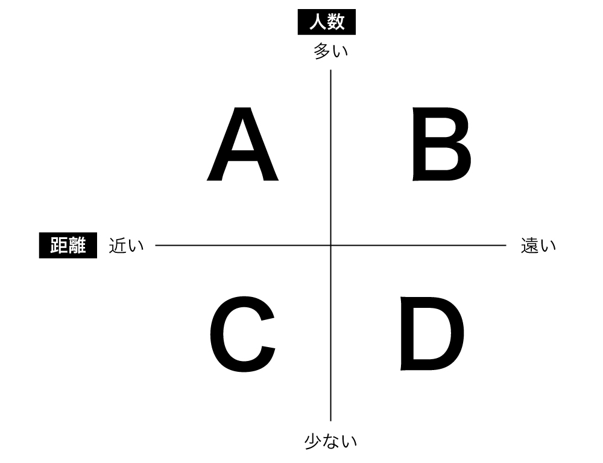
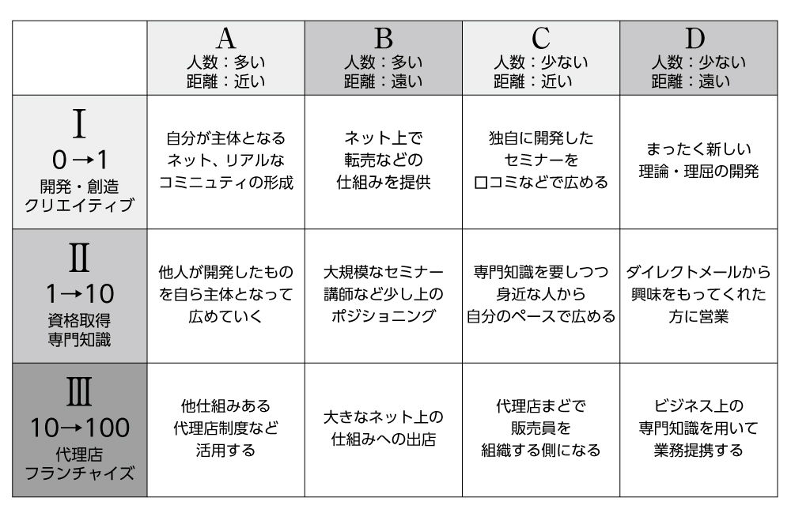

| あなたにピッタリのビジネスで今より稼ぐ | |
| 北塔 久見子 | |
| スターティアラボ株式会社 (2018) | |
はじめに
あなたの苦手なことって何ですか。私には、苦手なことがたくさんあります。何かを記憶するとか、正確性を求められることはとても苦手です。普段の生活では忘れ物も多いですし、なかなか、部屋の片づけや書類の整理が上手くできません。ずっと前ですが、証券会社に事務職の派遣で仕事にいったことがあります。私は、果たして、優秀な事務方だったでしょうか。もちろん、お察しの通りです。ただ、ハンコのチェックをするだけなのに、間違えるし、途中で眠くなってしまいますし、ひどい有様です。
そんな私ですが、今では時々、こんなことを言われます。なんでもできるんですねと。こんなことを言われると、きまって苦笑いをしながらこう答えます。何でもはできませんよと。
人には、向き不向きがありますし、自分がどこに向かって進めば良いのか分からなくなることもあります。やりたいことを仕事にしてみたのは良いけれど、一生懸命やっているのに、どうして上手くいかないのだろう。そう立ち止まってしまう人は少なくありません。私も長い間、なぜ自分のやりたいことが思うように形にならないのかと、つまずいてばかりいました。一体、何が原因で上手くいかないのだろう。その原因が分からなければ、前に進みようもありません。
本書では、私が独立してからつまずいてきた経験を基に、ビジネスを始めたのにどうして今よりも稼げないのかという理由を11
のタイプ別に分けて綴っていきます。実際に、私自身が、以前はこうだったなと感じることや、今でもまだこういった部分があるのではないかと振り返りながら、この11
のタイプを作り出しました。自分が何につまずいているのかを知ることが、まずは、夢を叶える近道です。そして、それを基に、ビジネスの形を作っていく必要があります。第三章以降では、具体的にあなたにピッタリなビジネスを作る方法論についてふれていきます。現在の課題を把握しながら、自分に向いているビジネスを作ることができれば、それは長く続く良いビジネスになっていきます。
もし、あなたが、今、独立をして何かやってみようと考えている。もしくは、独立してビジネスをやっているけれども何かにつまずいている。そんな状況にあるとしたら、本書はそこから抜け出すヒントになるかも知れません。
あなたは何が得意で何が苦手なのか。自分自身どうなりたいのか。今現在抱えている課題は何なのか。あなた自身をまず知り、自分にぴったりなビジネスをしていれば、自分らしく輝ける日はそう遠くはないかも知れません。
第一章
あなたが今より稼げないタイプ別11
の理由
夢見る夢子ちゃんタイプ
夢子ちゃんは、今の自分が大嫌いです。もしかしたら、鏡に映る自分は素敵なのに、写真に写るとなんか太っていて自分じゃない。どうして本当の自分は写真には写らないのだろうとさえ思っています。なので、いつも現実とはかけ離れた夢を見がちです。
夢は見るのに、コツコツ地道に夢を叶えるための努力は続かないかもしれません。
いつか運がむいてくる、白馬の王子様が迎えに来てくれると心のどこかでは信じているかも。ちなみに、占いが大好きです。占いで大器晩成って出たから、私の夢は必ずかなうんだと根拠のない自信はあります。
口ぐせは「○○したい」です。「将来こんなことをしたいの。こんなお店を持ちたいの。こんな風になりたいの」という話をよくします。口では「○○したい！」とは言っても、心のどこかでは自分を幸せにしてくれる白馬の王子様を待っているので、自分が夢を叶えるための具体的な行動にはなかなかうつりません。
夢見る夢子ちゃんが今より稼げない原因は、夢を目標にしないことです。
言い訳ばかりちゃん
言い訳ばかりちゃんは、とてもプライドが高いです。頭が良いので、学歴も高く仕事ができるように見えます。仕事を頼むと、分かりましたと快諾をしてくれて比較的仕事もできます。
ところが、ひとたび仕事で失敗をすると、そこからは言い訳の嵐の始まりです。「でもそれは......」「だってこうですよね？」そんな言葉が続きます。頭が良い分、言い訳もたくさん出てきます。もちろん、その言い訳は正しいかも知れないですが、周りから実はどう思われるか知っていますか。あの人、仕事できるかも知れないけれど、付き合いにくいよね。そんな風に思われているかも知れません。
最初のうちは仕事をお願いされ信頼もされます。ところが時間が経つにつれ、後々面倒なのはごめんだから、彼女に頼むくらいなら別の人に頼もうと周囲は思い、気が付いたらあまり仕事を任されなくなっているかも知れないです。
人は、気持ちよく一緒に仕事ができる人を好みますから、素直に間違いや失敗を認めることができないとうまくいきません。
言い訳ばかりちゃんが今より稼げない原因は、自分の過ちを素直に認められないからですね。
一歩が出ないよちゃん
一歩が出ないよちゃんは、石橋を叩いて叩いて渡らないのが好きです。大変勉強家で、いつもたくさんの本を読みます。仕事も一生懸命真面目にやります。自分がやりたいことはあって、そのための勉強や準備をしますが、新しいことへの挑戦は躊躇します。
今の自分と比べて理想が高すぎるので、それを叶えるためにどうしたら良いのかが分かりません。挑戦してみたいなと思っても、大きすぎる理想の前では尻込みをしてしまい、心のどこかで今のままで良いと思っているのかも知れません。
はたから見ると、準備しながら少しずつ進めば良いのにと不思議に思うくらい準備万端になるまで動きません。彼女の口癖は、「もう少し」。
周囲の友人から挑戦してみたらいいのにと言われても、もう少ししてからと引き伸ばします。「もう少し勉強してから」「もう少し時間が経ったら」「もう少し準備をしてから」。
彼女のもう少しがいつくるのかは誰にも分かりません。
一歩が出ないよちゃんが今より稼げない原因は、完ぺき主義すぎることです。ビジネスに完璧なんてないのに、完璧になるまで待ってしまいます。
技術はあるのに知識がないだけちゃん
技術はあるのに知識がないだけちゃんは、自分の仕事に大変熱心です。何を聞かれても答えられるように準備万端。自分の専門分野に関しての知識はバッチリです。でも、ビジネスで稼いでいくための知識はありません。そもそも、自分で何かビジネスをしようと思っているのに、ビジネスをしていく上でビジネススキルが必要ということも知りません。
行動力はあるので、自分のサービス向上のために、資格取得や技術習得に余念がなく、新商品の勉強にも熱心です。身に付けたり、新商品の導入で一時的に稼げたとしても、そのあとが続かず「もっと良いものがあれば」と探し続けています。
自分の商品が良ければ売れる。自分のサービスが向上すれば売れる。そんな風に思っています。世の中、せっかく良いものなのに買う人が少ないので販売終了となる商品・サービスはたくさんあります。残念ながら、良いものだから売れる、良いサービスだから売れるというわけではないということを彼女は知りません。
知識がないだけちゃんが今より稼げない原因は、売上をたてるための知識がないのが原因です。
移り気ちゃん
移り気ちゃんは、好奇心旺盛です。自分の気になったことは一生懸命学びます。友達が、こんな資格を取ったんだよね、こんな会に行ったんだよねと声をかけると私も行ってみたいと積極的です。
ところが残念なことに、１年もすると違うことを始めています。前にやっていたアロマはもうやらないのと聞いてみると、やらない訳ではないけれど、最近はメイクに力をいれているんだよねと答えたりします。
会うたびに、○○を始めたんだよねが口癖です。いつも違うことをしているので、周りの友人は、いったい何をしている人なのかは分かりません。そして、気が付くと資格はたくさんもっている。できることも多いはず。でも、それで暮らせるほど稼げている仕事は一つもありません。
また、お付き合いでお友達のセッションを受けるのも好きです。自分がお付き合いで行っているので、周りの友人もお付き合いでは来てくれます。でも、お付き合いなので固定顧客にはなりません。どうして、１回きりでリピーターにならないのかしらと、彼女はよく首をかしげています。
移り気ちゃんが今より稼げないのは、自分自身に筋の通った軸がないことが原因です。
取っ散らかり子ちゃん
取っ散らかり子ちゃんの特徴は、自分のやりたい方向性がはっきりしていて前を向いて行動します。周りからみると、驚くほどパワフルで、夢に向かってエイエイオーっと進んで行きます。人前で話すのが上手だったり、人と繋がるのが上手いので講師業や営業などで成果を出しているかも知れません。
ところが、どこに向かって営業をする、その場所に行って話すなど決まったことを次々とこなしていくのは得意ですが、やらなければいけないことが多くなると何をどのように進めたら良いのかが分からなくなります。万が一立ち止まってしまうと、自分のやりたいことが何なのかさえ分からなくなる場合もあるでしょう。
取っ散らかり子ちゃんは、思考の整理が苦手です。よく、私、今何をしたらよいか分からなくなったんだよねとぼやきます。先読みをして、現状分析をして、計画的に進めるなどと言われても、それをどうやってやったら良いのかが分からないです。部屋や職場のデスク周りも乱雑で、片づけ・整理ということに対して苦手意識をもっている可能性が高いです。
次のステージに進んで稼げるチャンスが巡ってきても、どうしたら良いのかが分からないので、それを逃していることもあるかも知れません。
取っ散らかり子ちゃんが今より稼げない原因は、優先順位を決めて段取り良く進めていけないからです。
行動足りないのちゃん
行動足りないのちゃんは、真面目です。教わったことはきちんとこなしますし、やるべき仕事も正しい方向で一生懸命にやります。自分なりの目標もたて、計画性もバッチリです。仕事は、要領よくこなして自分が決めた時間で切り上げます。そのあと、余暇は自分の趣味などに費やしているかも知れません。
行動足りないのちゃんの特徴の一つに、仕事をやっているのに、思ったほど自分の目標通り成果が出ていないというのがあります。いつも、ちゃんとやっているのに、どうして成果に結びつかないのかしらと感じているでしょう。彼女自身、仕事を頑張っているし、成果を強く望んでいると思っていても、心の底では仕事での成果は望んでいないのかも知れません。
行動足りないのちゃんが今より稼げない原因は、実は、自分が思っているほどその仕事に情熱がないために、成果を出すための工夫や発想までたどり着いていないからです。
こだわり強すぎちゃん
こだわり強すぎちゃんは、とても頑固です。自分のやりたいこと、やりたくないことがハッキリしています。私はこの仕事がしたい、こういうやり方をしたい、これはやりたくない。はっきりとしている分、とても分かりやすいです。友達からも、愛情をこめて頑固だねと笑われます。
こだわり強すぎちゃんが自分で営業職に就いた時や、自分のビジネスを始めると、こだわりが強い分知識や技術をしっかりと学びます。学んでこれが良いと思ったらその道を突き進み、他のものに目移りすることなく進んで行きます。
ところが、こだわりが強い分、人の話をあまり聞きません。なかなか他の人のアドバイスを聞くことができないのです。
こだわり強すぎちゃんの口癖は「なんでこんなに良い物なのに売れないんだろう」です。
商品やサービスについても、自分が売りたいと思ったものを売ります。周りのニーズではなく、自分が売りたいものを売ってしまうことから、気が付くと周囲は置いてきぼりです。売り方も自分なりのやり方を貫こうとするので、なかなか稼ぎには繋がりにくくなってしまいます。
こだわり強すぎちゃんが今より稼げない原因は、必要なことを周りから学ぶのが苦手だからです。
嘘つきちゃん
嘘つきちゃんは、目立つのが好きです。自分をよく見せようととても頑張るので、おしゃれに余念がありません。ＳＮＳにリア充ぶりを投稿するのも大好きですし、一見友達も多いです。友達の中で、自分が良く見えるのが大事なので友達付き合いもとても良いです。
ところが、ついつい、周りと話を合わせるために嘘をつきます。もちろん、嘘をつくこと自体良くないこととは分かっていても、自分がついた嘘が悪いとは思っていません。知らないことでも、「それ知っている」というのが口癖なので、本当に知らなくて困っても、なかなか人には相談ができません。
嘘をつくのが癖になっているので、ついつい仕事でも嘘をついてしまいます。しかも、この嘘は、自分を正当化して良く見せるための言い訳です。例えば、「本当は私、辞めたくないけどＡさんが辞めるので仕方なく」など。Ａさんに聞いてみると、「私そんなこと言っていないし、辞めないよ」と、後からバレてしまう嘘をついうっかりつきます。
嘘つきちゃんは、人を傷つけたり、陥れるための嘘はつかないので、嫌われたりはしません。ただし、ついつい自分を良く見せたり、人のせいにして自分の本音をごまかす嘘をつくので仕事の上では信頼されにくいかも知れません。あの人の言うことは「話半分に聞いておこう」と周囲からは思われているかも知れないので、大きな仕事が巡って来なくなってしまいます。
嘘つきちゃんが今より稼げない原因は、最終的には周りからの信頼を失ってしまうからです。
欲張りちゃん
欲張りちゃんは、とても仕事ができます。自分の利益になりそうなことには、すぐに首を突っ込むので、一時の収入は高めかも知れません。本来の仕事の範囲以外にも手を広げるのが得意なので、出会った人ともすぐに仲良くなり「一緒にやりましょう！」と組んで仕事をするのが得意です。
ところが、しばらくすると自分の利益を優先させるあまり、最初と言っていることが変わります。周りとシェアしようという気持ちがあまりないので、自分の利益が少しでも減る可能性を感じると、いくつも言い訳をして自分の利益が減らないように働きかけをします。あなたのためですよと口では言っていても、行動が自分の利益のためになっているので、気が付いたら周りから人は去ってしまうのです。友達は多いように見えても古くからの友達が少ないという特徴があります。
欲張りちゃんは、ついつい自分の利益に着目しがちです。周りとの調和で、相手に支払っておいた方が、自分にあとで返ってくるという発想をなかなか持てないために、最終的には大きな収入を逃してしまいます。
欲張りちゃんが今より稼げない原因は、周りよりも自分の利益を優先してしまいがちだからです。
孤独を愛する子ちゃん
孤独を愛する子ちゃんは、本を読むのが好きで自分の意見をしっかり持っています。人からどうこう言われようが、意見は曲げません。仕事も自分のスタイルを崩さないので、きっちり着実にこなしていきます。基本的には、人と接することが好きではないので、何をやるにも物事を一人ですすめがちです。どんな時でも「一人で大丈夫です」というのが口癖ですが、本当は、一度つまずくとどうして良いかが分からなくなります。考える力はありますから、自分でなんとか乗り切ろうとしますが、本に書いていないことは分かりません。
普段から、分からないことは人に相談をしている人からすると、とても不思議です。分からなければ人に聞けばよいじゃないか、困ったなら人に相談すればよいじゃないかと周りでは思うことも、彼女の中ではどうして良いかが分からなくなります。散々、悩んで苦しみ、自分で解決しようとするので気が付けば悪化することも度々です。
孤独を愛する子ちゃんは、周りからの助けを受けられないので、自分ができる範囲内でしか仕事をすすめられません。そのため、一つ上のステージにあがって稼げるようにはなりにくいかも知れないです。
孤独を愛する子ちゃんが今より稼げない原因は、周りからの応援を得られにくいからです。
第二章
実践者に学ぶ「上手く進むには訳がある」
夢を目標に変えて行動し続けた元ＮＨＫキャスター
子どもの頃、テレビを見てアナウンサーになりたいと思う人は多いかも知れません。それでも、それを本当に目標にして叶えていけるのはほんのわずかな人だけです。元ＮＨＫキャスターで、現在は、アナウンススクール運営や話し方の研修講師をされている相澤静さんは、そんな夢を叶えた一人です。
相澤さんは、小学生の頃にアナウンサーになりたいと夢をもちました。大学を卒業して、社会人になる時に、各局のアナウンサー試験に挑戦しますが失敗します。そこで諦めてアナウンサーとは違った職業に就職する方も多いでしょうが、相澤さんの行動は違いました。少しでもアナウンサーに近い仕事ができるようなバイトを探したそうです。
そんな中ですごいなと思えるエピソードがあります。一切、新規でアルバイトの募集をしていないケーブルテレビ局がありました。そこに、書類を送って、とりあえず話は聞きますと呼ばれていった内容が、今は誰も雇わないつもりだというお断わりでした。普通は、そこで、断られて終わりなのですが、相澤さんはどうしても働きたいと食い下がったのです。仕事も、三脚を運んだりする雑用でお金も払えないようなものしか今はないと言われたそうですが、それでもやりたいんですと言い続けました。その数日後、アルバイト代８００円で採用しますという電話がきたそうです。そうして、数年間テレビ局でアルバイトをしながら、５００回以上各地にある放送局の面接を受け続け、とうとうＮＨＫの室蘭放送局に採用されたそうです。
そんな相澤さん、今では元ＮＨＫのキャスターだった経験を活かして、相澤静アナウンサースクールを運営し、生徒の９割を合格させています。また、話し方の研修講師として、各省庁や大手企業などでマナーとしての話し方、売上・印象アップの話し方、夢の叶え方などを教えています。
こうなりたい、ああなりたいと夢をもっても、本当に叶うまで努力をし続ける、食らいつける人はそう多くはないです。だからこそ、狭き門なのですが、夢にむかっての行動が正しければやり続けさえすれば叶う。相澤さんを見ていると、そんな風に思えてきます。
言い訳せずに素直にやる！ 60 代で起業スタート
ステンドグラス工房の大田さんは、実は60
代からビジネスをスタートさせた方です。お勤めしていたことはありますが、自分で食べていくためのビジネスの経験はありません。稼いでいくというよりは、アロマや九星気学などを半分趣味としてやっていました。そんな中、離婚を機に、一念発起して自分の好きなことをきちんと仕事にしてみようと挑戦をしています。
彼女がステンドグラスを仕事にしようと思ったのは、北海道にある美瑛町で先生をされている方との出会いがきっかけでした。その方自身、ある程度の年齢になってからステンドグラスの仕事をされたということで、自分でもできるのではないかと一歩踏み出したそうです。
大田さんのすごい所は、仕事としてやってみると決めたら、言い訳をせずに勉強できる環境に身を置いていったところです。様々な年齢層が集まる交流会への参加や、ＦａｃｅｂｏｏｋなどのＳＮＳも積極的に活用します。自分より20
歳以上も年齢の離れた方々から学び、それを取り入れて改善までできるのは、ある程度の年齢になるとなかなかできるものではないかも知れません。周りから何か頼まれても、素直に引き受けて挑戦しよう、成長しようという意気込みがありますから、自然と人に頼られる存在になっていきます。
自分よりも明らかに年齢が下の人たちからの指摘を素直に聞いて、成長ができるというのは、横で見ていて本当に頭が下がります。少しずつではありますが、彼女のビジネスが確実に大きくなってきているのは、ここに秘訣があるのではないかなと感じています。
まずはやってみることで形にしていった英会話スクール
英語をもっと話せるようになりたいと思っている人はたくさんいますが、ＳＡＹＥＳ英会話スクールを経営する瀬尾さんの周りには、強い思いで話せるようになりたいという方々がたくさん集まります。それは、実は瀬尾さんが、このビジネスを始めたきっかけにあるかも知れません。
彼女が英会話スクールを始めようと思ったきっかけは、瀬尾さんのお父様が亡くなられた際の一言でした。長年英語を学んできたお父様の臨終に立ち会った際、「お父さん英語話せるようになりたかったね」と瀬尾さんが問いかけたら、「Ｉ Ｔｈｉｎｋ ｓｏ．」と返ってきたそうです。お父様の最期の言葉を聞いて、「もっと英語を話せるような人をたくさん作りたい」そう決意して、最初は、お父様の会社を引き継いだお母様の元で一事業部としてスタートをさせました。
当時は、ネットの環境なども今ほど整っていませんから、地元の方に通って頂く英会話スクールです。都会ではなく、栃木の田舎ですから、個人でやっているようなスクールには外国人の先生もいません。そこで、外国人の先生がいたらいいんじゃないかなと、これは良いのではなないかと思うことを、どんどん取り入れてやってみました。
また、瀬尾さんのやってみようエピソードには、こんなのもあります。中学３年生の子どもが、英語が全然できないので、高校受験までに英語が出来るようになりたいとやってきました。よくある話ですが、実は、受験まで、２か月半。しかも、英語のテストの点数は１００点満点中９点。アルファベットも全部は書けません。もしかしたら、難しいですと断ってしまうのもありかも知れません。ところが、瀬尾さんは大変なのを承知で受け入れました。もう日にちがないということで。家に下宿をさせて夜中２時過ぎまで一緒について教えたそうです。結果的には、84
点までとれて、無事受験に合格をしたとのこと。
瀬尾さんのすごいところは、とにかくやってみようと一歩を踏み出すところ。そして、やってみたら、徹底的に寄り添って一緒に歩いていけるところ。
現在は、英会話を通じて外国人の彼氏を作りたい方向けの事業にも力を入れています。生徒さんの中には、素敵な外国人の彼を作りたい。そんな風に思う方も少なくありません。そこで、これを叶えてあげたいと思った瀬尾さんですから、どんどん行動を始めます。今までのノウハウでは、デートで使う英会話は教えられるけれども、どうしたら素敵な彼氏をゲットできるかまではノウハウ化されていません。そこで、まずは外国人の彼氏がいる人に聞き取り調査をして、どこで出会ったのかを聞き出しました。更に、それを元に、自分が実際に体験をしてみて、色々なパターンを見つけてノウハウ化していっています。
やってみたい。良さそう。と思っても、ここまでまずは自分でやってみる人はそう多くはないのではないかなと思います。瀬尾さんの、まずはやってみる。それが、やりたいことを形にしていく大きな秘訣だろうなと感じています。
マーケティングで更に広がりをみせる骨盤体操トレーナー
山口さんは、骨盤メイクという骨盤体操で太りにくく健康な身体作りを指導しているトレーナー。ほとんどの日本人女性は、足の付け根が内側に巻いてしまっていることで、太りやすく疲れやすい身体になってしまっているそうです。それを毎日たった３～５分、自分で気が付いた時に骨盤を正常な位置に戻す体操をするだけで、１か月もするとお尻が上向きのきれいなシルエットに。しかも、長時間歩いても疲れにくく、好きなものを食べても太りにくい体になるという女性には夢のような体操を教えています。
実は彼女、学生の頃に、過度なダイエットから摂食障害になった経験をおもちです。それをきっかけに、自分自身の身体にとても興味をもち、健康できれいな身体作りをするためには、一体どうしたら効果が高いのかということを追及してきました。気になることがあると、とことん追求をするタイプの山口さんです。身体の様々な理論を研究するために専門の学者のところへ、身体の仕組みや動きを学びにインドへヨガの修行に、更に身体の芯の部分や呼吸法を習うために合気道の先生に弟子入りなど、とことん知識と技術を身に付けてきました。
ところが、教えている内容は素晴らしいのですが、始めたばかりの頃はなかなかその仕事だけで食べていくのは難しく、バイトを掛け持ちしながらの日々だったそうです。とても効果の高い体操だけれども、お友達価格で教え、スタジオ代も払うので精一杯になることも。技術者やセラピストの方で多いですが、技術や知識に目を向けるものの、ビジネスをしていく方法をしっかりと学ぶことは得意ではありませんでした。
そんな中、彼女は友人の誘いでビジネスに対しても勉強をして知識を身に付けた方が良いということを知りました。価格の設定の仕方、既存顧客の管理方法、集客の仕方、マーケティングなどなど、ビジネスの基礎知識を学ぶことでバイトをしながらの生活から、３か月ほどで自分のやりたいレッスンである程度食べていけるようになっていきます。
山口さんが、最初この仕事を始めた時の目標は、ぼんやりとダイエットで悩む人が世界からいなくなればいいなというものだったそうです。世界からダイエットで悩む人をなくすというのは、壮大な目標ですから一生取り組むものですが、大きな目標を掲げているからこそ、今日・明日に結果が出ないのは当たり前。結果に繋がらないと、つい焦ってしまう性格だそうですが、ビジネスの知識をきちんと学ぶことで、この先自分は何をしたら良いのかが分かれば、何をすれば良いのかが見えてきて形になっていくのでしょう。
資格を軸としてビジネス展開を考える助産師
吉積さんは、長い間大学病院などで、助産師として勤め独立をしました。勉強がとても好きなので、助産師の資格以外にも、エステや個性心理学など資格をいくつも持っています。
助産師の資格を持ちつつ、幅広く勉強をしていく中で、国際ラクテーション・コンサルタントという資格に出会いました。この資格は、看護師、助産師、保健師、医師、ソーシャルワーカー、栄養士、理学療法士、教育者などの専門職をはじめ、母乳育児支援経験と確実な知識体系を持つ非専門家にも広く門戸が開かれており、母乳育児の推進や支援を行っています。
吉積さんによると、母乳育児を取り入れることで、女性の育児負担は圧倒的に減るそうです。また、女性の働き方の見直しが必要になっている中で、母乳育児が定着すると企業の復職もスムーズに行えるとのこと。災害時などにも母乳育児は有効です。女性のためだけではなく、社会のために絶対に必要なこととして、ビジネス展開を始めました。
ビジネスにしていく過程で、色々とやってきていたことが活かされていきます。あれこれと資格をとっても軸がないと使いこなせない人は多いですが、吉積さんは助産師の経験から色々と組み込んでビジネスを考えていきます。
助産師として、子どもを産む時のサポートもそうですが、産前産後の母親のケア。母乳育児の指導。ここには、今までとった個性心理学の資格なども役に立ちます。助産師として人と関わってきた経験を活かして、企業向けに復職支援や職場の人間関係を改善して売り上げに繋げるプロジェクトの提案もしています。今後キャリアコンサルタントの資格もとり、更に女性が働きやすい社会を作ることを使命として、日々困難なことに出会いながらもすすんでいく強さは目を見張るものがあります。
あれこれと手を出して形になりにくいことが多い中で、絶対にこれをやりたいという情熱と今までの経験が、資格としてとった知識が活きていきます。吉積さんをみていると、一つの軸があれば、自分の興味をもったことにはどんどん学んでも無駄にはならないのだなということを改めて勉強させもらえました。
優先順位が分かることで軸ができた歩くセレクトショップ
現在、歩くセレクトショップとして事業の幅を広げる齊藤美紀さん。元々は、ごく普通のＯＬとして企業に14
年お勤めをしてきました。これがやりたいからといった理由はなく、大学を卒業して普通に就職をして事務職として働いていました。
そんな中、たまたま友人から教えてもらった紅茶や高級ジュースがきっかけで、良いものを人に広めるということに興味を持ちます。良いものに出会って広めたい、それを仕事にしたいと思う女性は多いかも知れませんが、それを仕事にするとなると簡単には行きません。自分が体験、体感を得て、これは素晴らしい。世の中に埋もれてしまうのはもったいない。そう思った商品・サービスを自動的に自己利益に関係なく、齊藤さんは人に伝えてきました。自己利益関係なく伝えていますから、傍から見ると色々とやっていて何が仕事なのか分からない人となりがちです。
そんな時に、彼女は「営業は科学である」という武田吉康氏の芸術的営業道と出会いました。武田氏は、外資系企業のセールストレーナーとして数千人もの営業マンを育成してきた方です。彼女自身、営業という意識がなかったのですが、今まで人に伝えてそれを相手が購入するというこれまでやってきたことの点と点が線で繋がった瞬間でした。そして今では１００％クロージングの法則を掴み、営業のイメージを変えるために武田流芸術的営業道を世に広めるために活動をしています。
最初は、色々と人に伝えているだけですから、何を優先して仕事にしたら良いか分かりませんでした。でも今では、武田流芸術的営業道というのを第一優先として、武田流を使い世の中に良いものを普及している「歩くセレクトショップ」を展開している人としてビジネスを確立してきています。
たくさん行動することで時間管理術まで生み出すヒットメーカー
料理研究家、タイムマネージメント研修家、ズボラ主婦代表などと多くの肩書きをもつ実業家の浅倉さん。「主婦のストレス値をさげる」をテーマに掲げて、「ゆるベジ」「あな吉手帳術」「ズボ連」「日本時間管理術協会」など、主婦の方々に喜んでいただけるサービスをいくつも展開しています。著書は、28
冊。各種メディアでも頻繁に活躍をしています。
実は浅倉さん、料理研究家ですが元々料理をするのは好きではなく苦手だったとか。タイムマネージメントも得意ではなく、主婦業に子育て、仕事とたくさんのスケジュール管理が上手くいかずパンクしてしまったことも多々あったそうです。そういった、自分の苦手なことから、楽しく乗り越える方法を次々生み出すのが彼女の得意なことです。そして、それを必ず誰にでもできる再現性にこだわって、仕組み化していきます。
浅倉さんは、これをやってみたいと思うと、どうしたらそれが形になるのかとことん考えます。得意じゃないと思っても楽しくできるための工夫をしますから、自然とそれに費やす時間が増えます。時間管理術を教えているくらいですから、ご自身も時間の有効活用がとても上手です。以前、浅倉さんの手帳を拝見した時に、付箋がたくさん貼ってあって予定や作業など色々とあるのにも関わらず、最近は少し時間があるからというお話をされていました。
また、著名な方にも関わらずフットワークがとても軽いです。興味のある勉強会があれば参加をし、仕事仲間との飲み会なども遅くなっても顔を出します。浅倉さんのメソッドの素晴らしさはもちろんですが、気さくなお人柄から浅倉さんの周りには自然と人が集まってくるので、苦手なことは人に頼むことができるのでしょう。そうすると、浅倉さんは本来やるべき仕事に更に時間を費やせるようになっていますから、自然と得意分野に割く時間が増えます。ビジネスが上手くいていっている方の多くは、そのことをいつも考えているので良いアイデアなどが次々と浮かんでくるのではないかなという見本のような方です。
自分のこだわりと人の話に耳を傾ける姿勢で今がある未来観コーチ
技術や資格などで独立する方の多くは、自分の仕事にこだわりを持っています。こだわりを持っているからこその専門性もあれば、こだわりが邪魔をして上手くいかないことも少なくありません。
そんな方が多い中、政門さんは仕事のスタンスややりたいことにこだわってきたからこそ、今がある方のお一人です。彼女は、大学を卒業してすぐに就職という道には進まず、しばらくフリーターをして自分が納得できる仕事を探し続けてきました。カウンセラーや保険業、離婚などの経験を経て、現在は脳科学や心理学をもとにした「ディスカバリープログラム®
」を用いて、未来観コーチングというのをされています。これは、自分の個性や才能を活かして本当になりたい自分になれるお手伝いをするプログラムです。私もこのプログラムを受けて、何を中心に仕事をしていくと楽しく自分らしくできるのかというのを発見させて頂きました。
政門さんとお話をしていると、どんなお客様と付き合いたいのかなど、自分のスタンスやこだわりをとても大切にしているのが伝わります。以前、こんなエピソードをお話頂きましたが、彼女が旅行などで行きたい先ができると、生徒さんに向けて合宿のご案内をするそうです。自分一人で行くのもなんだからと、２、３日滞在しているので来ませんかというご案内をして合宿という形でクライアントや受講生などと交流するとのこと。政門さんと深く話ができる場づくりなどには、こだわりを感じます。
だからこそ、政門さんのファンとなるしっかりしたお客様を獲得することができているのですが、専門性にだけこだわっていると頭打ちになってしまいます。そこで、他の方々から学びを得られる交流会に参加をする、営業やマーケティングを勉強するなど日々他の分野にも耳を傾けます。
彼女は、しっかりとしたファンを増やしつつ、ビジネスとして成り立ってきているのも、専門性だけにこだわらずに幅広く、学びを深めていったことにあるのだなと感じます。
等身大の自分で接するからこそ信頼されるサロンオーナー
飯田さんは、会社を辞め、自分でもみほぐしや温活などのサロンを始めた20
代の方です。20
代の前半で会社を辞めて独立をしましたが、技術の要する世界ですから、それだけですぐに食べていくのは難しいです。なかなか結果に繋がらない、収入にならないと今後のことを不安に感じることも多かったそうですが、気持ちを切り替えて今までにやったことのない仕事でも、チャンスがあれば挑戦してみることにしたそうです。
彼女自身もそうですが、20
代の頃は、本当に何が向いているのか、どんなことができるのかが分からない人も少なくありません。そこで、自分が学び成長できる場に身を置くことが一番の成功の近道ですが、本当に自分が学び成長に繋げられるかは、そこでの仕事の向き合い方に大きく関わってきます。
経験が浅く知識がないうちは、背伸びをしがちです。知ったかぶりや、良く見せようとすることも多いと思います。最近では、ＳＮＳで発信している内容と、本当の自分とではかけ離れている。そんなことも少なくないでしょうが、彼女はいつも等身大の自分で人と接します。ウソをつかず、虚勢を張りません。未経験のことをする訳ですから、知らないこともたくさんあります。自分で調べて、分からなければ素直に周りに聞くことができます。自分を良く見せようとしませんから派手さはないですが、丁寧に人と向き合えますから徐々に信頼を勝ち取っていくことができます。最近では、自分の好きな将棋やお笑い、お酒などの話を切り口に年配の男性からも可愛がられるようになってきました。いつも自然体で媚びるわけではないので、ゆっくりじっくりではありますが、固定客を増やし、仕事で重要な役割も回ってくるようになってきています。
まずは相手を尊重することから信頼を得るＮＬＰトレーナー
女前塾を主宰しＮＬＰトレーナーとして個人から企業まで幅広く活躍されている池田さん。ＮＬＰとは、神経言語プログラミングと訳され、汎用性の高いノウハウ化された実践心理学です。池田さんは、ＮＬＰとシナプソロジーという手法を用いて、柔軟な思考力・感性を高めて自分と他人のことが分かるお手伝いをしています。
実は、彼女のご実家は１０００億円を超える大企業のご令嬢なのですが、大変気さくな方です。見た目はパリッと恰好よく、中身は温かく情熱があります。実は、お父様がまだ会社が小さい頃から、大きくしていったのを傍で見てきていますから、経営哲学なども自然と学んでいました。また、ご自身の離婚経験や専業主婦としての子育て経験の中で、自分がこの世に持って生まれた使命はなんだろうと考えるようになり、ＮＬＰを７年かけて学んできたそうです。そこから、今では潜在能力を引き出して、本気で活きる人たちのサポートをされています。
池田さんのお人柄は、一度名刺交換をしただけでも伝わります。仕事柄、「あなたらしく生きていますか？」「あなたの能力は活かしきれていますか？」と、常にあなた目線でお仕事をされていますから、仕事のスタンスは相手をとても重視します。相手の話に耳を傾け、その人に何を提供できる自分なのかというのを考えます。
「たらいの法則」や「与えるものは与えられる」などの言葉があります。これは、自分が先に何かを貢献するとそれがめぐりめぐってかえってくるという考え方ですが、自分から先に率先して相手のメリットになることや収入になる行動をとるというのは口で言うほど簡単ではありません。池田さんは、それを当たり前のこととして行います。普段から周りの人のために動きますから、何かあった時には池田さんに協力をしたいと思う方が集まります。
時間はかかりますが、地道に積み上げた信頼は最終的には大きなものになっていきますから、そういった人脈を生かして毎年著名な方を集めた講演会などを開催しています。
池田さんだからこそ協力をする、池田さんだから仕事をお願いしたいと思う人が出てくるのは、こういった姿勢からだといつも学ばせてもらえます。
仲間の力を最大限に活かして事業を成功に導く経営者
主婦とママ専門の人材派遣業から事業を起こした野村さん。女性が世の中で活躍するためのお手伝いをと、「お片付けコンシェルジュ」サービスや保育事業、ワーキングマザーのためのコワーキングスペースなど女性の生活を支える事業をいくつも展開しています。
そんな野村さんの会社には、男性は１名のみで、あとは明るく前向きで優秀な女性ばかりが集っています。ともすれば、優秀な女性が多いと、意見のぶつかり合いなども出てくるものですが、野村さんは周りをやる気にさせてみんなで頑張る。そんな雰囲気づくりが得意です。野村さんに会社の中で大事にしていることをたずねると、こんな話をしてくれました。
大事にしているのは率先垂範です。まずは、自分が模範となって一番営業成績を作ること。とにかくこれにつとめていると。野村さんの背中を見て、周りのスタッフも動かされるのだなと思います。
また、ご自身もとても勉強熱心なので、色々な勉強会などに参加して他の成功者から学ぶのも大事にしています。そこでできた仲間とも上手に付き合うことから、野村さんの周りには自然と応援者が増え、周りからも引き上げられます。
先輩や経験者から真摯に学び、スタッフの声に耳を傾け、みんなが頑張る環境を作るのは当たり前のようで、誰でもできることではありません。それを、自分は特別なことをしていないと言ってしまえるところが、次々とビジネスを成功させていける秘訣なのだろうと思います。
第三章
あなたにピッタリのビジネスの選び方
ビジネスは業種ではなく、本質的に何を喜びと感じるのかで選ぶ
職業なんてなんでもいい
あなたには、子どもの頃、夢やなりたいものはありましたか。私は残念ながら、夢やなりたいものはありませんでした。小学校や中学校の卒業文集で、将来の夢を書かなければいけなかったので、とりあえず知っている職業で学校の先生や公務員と書いたことを覚えています。
今にして振り返ると、何になりたいのかという職業を問うのではなく、将来、どんな大人になりたいのかというあり方を問われていれば、随分と答えは違ってきたのではないかと思います。
私は、幼い頃から大人と関わることが比較的多かったので、子どもに寄り添ってくれる大人は好きでしたし、私の知らないことを教えてくれる大人、新しいことを一緒に想像してくれる大人が大好きでした。
子どもの頃には分からなくても、だんだんと大人になるにつれ、こどもの頃にあこがれた大人像というのは、そうありたい自分ではないのか、そんな風に思い描くようになりました。
私たちは、こうして、幼い頃から、職業として何になりたいのかを問われているので、社会に出る時に、何をしたいのかというところを職業で考えがちです。その職業を通じて、何ができるのか、自分自身がどう感じるのか。どのようなものを得られるのか。実は一番大事なのは、こういった職業の先なのですが、なりたい職業や業種で考えるので、やってみてなんだか違うなと迷いが生じやすくなります。
就活・転職でも同じですが、ビジネスを始める際にこの部分は極めて重要です。間違って進めてしまうと、こんなに頑張っているのになぜか上手くいかないと嘆くばかり。気が付けば金銭的に大きな負荷がかかってきて、精神的に余裕がなくなり負の連鎖が生まれやすくなってしまいます。そのため、私が○○の喜びを得られるためにこの仕事をしていると、自分の中で理解をして進んで行くことがとても重要になるのです。
あなたは自分自身と話をしたことがありますか
それでは、具体的に、どのようにしたら本質的に喜びと感じるものを見つけられるのでしょうか。それは、まずは自分自身がいったいどんな人間なのだろう、どんなことをしている時に楽しいと感じるのか、やりがいを感じるのかと考えるところからスタートします。
自分を知るための方法はいくつかありますが、大きく分けると
・自分自身と対話をする
・ツールを使う
・専門家を活用する
の３つとなりますが、まずは、自分自身との対話について考えてみましょう。
私は幼少の頃より、父親に、「なぜ」ということを問われてきました。一番幼い記憶では、小学校１年生の頃に「なぜ人は生きているのか」と問われたことを覚えています。そのため、常に「なぜ」が気になる子どもでした。なぜが気になり過ぎて、小学校の図書館にある本を隅から隅まで読んだことがありますし、「なぜ」という理由が分からず校則を上手に守れないこともあり、少し変わった子どもだったかも知れません。子どもの頃からですから、今でも私は常に自分の行動の意味を「なぜ」と自分に問いかけながら進む癖があります。
「なぜ」と自分に問う。これは、簡単そうですが、もしかしたら普段から「なぜ」と考える癖がない人にとっては少し難しいかも知れません。まず、は自分と向き合う時は「なぜ」と立ち止まることが大切だよ、ということを知っておくところから始めてみてください。
その上で、具体的に「なぜ、今私はこの仕事を選んだのだろうか」と考えてみましょう。この際ポイントとなってくるのが、選んだ理由がプラスの感情なのかマイナスの感情なのかという点です。
プラスの感情は、
・「その仕事で周りの人が喜ぶのが嬉しい
から」
・「それをしているとなんだかワクワクする
から」
・「日々大変なことの連続だけれども、得られる達成感がすごくある
から」
・「人に認められるのが快感
だから」
・「気の合う仕事仲間といるのが楽しい
から」
などなど。
マイナスの感情は、
・「家族を養わなければいけないから嫌い
だが仕方がないから」
・「好きではない
が、他にできることがないから」
・「将来が不安だ
から安定した仕事をするため」
などなど。
「なぜ、今の仕事を選んだのだろうか」を考え終わったら、「どんな未来を手に入れたい」と思っているのか。このことを考えてみてください。まずは、ざっくばらんに何でも構いません。
・とにかくお金持ちになりたい
・仕事はそこそこでいいから素敵な誰かと結婚したい
・その仕事を通じて、社会のためになりたい
・大きな家に住んで、好きな洋服着て、好きなだけ好きなものを食べたい
・社長になりたい
などなど、何でも構いません。
ここでも「なぜその未来を手に入れたいのか」と少し立ち止まって、それを得られた時の感情をイメージしてみてください。その感情を得たいから未来をそう願うのだということを意識してみましょう。あなた自身のプラスの感情を想像して、こんな未来を手に入れたい。そんなものを少し思い描いてみてください。
ここが、より詳細に、ワクワクとした感情をイメージできればできるほど実現する可能性は高くなってきますが、最初のうちは難しいかも知れません。
「なぜ」と問うのと同様に、日々の生活の中で自分が思い描く未来の感情をイメージしてみてください。
私は高校受験の時に、入りたい高校にすでに姉が通っていたので、いつも姉の部屋からこっそり高校の文集を盗み見していました。私はこの部活に入るとか、こんな先生がいるのだなとか、まだ受かってもいないのにワクワクしながら思い描いていた記憶があります。
今でも、大きなプロジェクトに携わる時は、責任感という不安に押しつぶされそうになりますから、そのプロジェクトを達成するイメージを頭の中に常に思い描くようにしています。私は特に映像でイメージするのが得意なので、プロジェクトごとに自分が目で見て楽しめるスライドやチラシ、ロゴなどを作ってワクワクしながら準備を進められるよう工夫をしています。
そして、更に、
「なぜ、その仕事を選んでいるのか」
「どんな未来を手に入れたいのか」
それを踏まえた上で、あなた自身は一体全体「何が得意な人間なのか」というところをあなた自身に問いかけてみましょう。
その仕事をあなたにとってピッタリのものにするためには、同じ内容の仕事であっても、やり方が違います。あなたが本質的に何を喜びと感じるのかを知って、あなたにピッタリのやり方でその仕事に取り組むことができれば、あなたは一気に凡人から天才へと変貌をとげることができるかも知れません。
例えば、あなたが新しく開発した素晴らしい化粧品を販売する会社を経営しているとします。使ってもらえれば気に入ってもらえるのですが、あなたはとても人と話をするのが苦手です。そのため、色々な場所にいって営業をしますが、とても良い商品なのにその良さは伝わらない。こんなことは、よくあるかも知れません。あなたがどうしても人と話すのが苦手だと分かれば、自分で話をしなくても済むような資料の準備をする。ネット販売をする。ビジネスの形を営業が得意な人に任せる仕組みを作るなどなど、いくらでもぴったりのやり方を見つけることができるのですが、あなた自身が何を得意な人間なのかが分からなければピッタリのやり方はみつかりません。
他の力を借りると早いのです
ここまでの話で、なんとなく自分自身に「なぜ」と問いかけながら、あなた自身が見えてきたのではないかなと思います。本を読んだり、自分で考えるのが得意な方は自分でできるかもしれませんが、一人で考えていても限界があるかも知れません。
そんな時は、ツールを使う、専門家にお願いをするというのをおすすめします。ツールについては、あなた自身がどんな人間なのかというのを示す分析ツールが巷に溢れています。まずは無料の簡易テストなどを受けて自分なりに合ったものを見つけるのをおすすめします。このツールを使えるようになると、あなた自身がどんな人か知ることができるだけではなく、周りの仲間がどんな人かも知ることができます。そうすると、どんな人と仕事をすると仕事がしやすいのかなども見えてきますから、ツールを使って周りの人たちと共通言語をもつというのは、気持ちよく仕事をする方法の一つです。
ツールだけでは物足りないと感じる場合は、専門家のセッションやトレーニングを受けるのも一つです。「なぜ」と自分に問い続けて自分の本質的なものを見つけるには時間がかかりますから、専門家の力を頼って効果的に自分が本来自分の望む仕事の形を見つけ出すのもおすすめをします。
私は長年、自分自身に「なぜ」と問いかけつつ、無料診断ツールや有料診断ツールを使いながら、自分を知り本来喜びと感じることのいくつかを見つけてきました。その中で、専門家の方々とも出会い、専門家からしっかり診断してもらうことで、ぼんやりと意識していた自分の本質的な喜びをはっきりとした言葉に置き換えることができています。
私は元々エステティシャンでした。ありがたいことに、長年エステサロンを経営することができ、たくさんのお客様にも恵まれてきましたが、ひょんなご縁からコンサルティング業に携わることになりました。最初は、コンサルティング業という職業に興味がもてずお断りすらしていたのですが、やってみるととてもやりがいがある仕事でした。
そんな折、ある専門家の方のセッションを受ける機会があり、私が本質的に喜びを感じることの一つに「人の人生が変わるのを見る」という項目がありました。
私なりに、とても納得をしました。エステサロンでも、お客様がキレイになって次のステージに上がっていくのをいつも応援してきましたし、それを嬉しく思っていました。コンサルティング業でも、クライアントの人生がどんどん変わることを見るととても喜びを感じます。反対に、私の実力不足で大きく人生を変えるステージまでもっていけなかったクライアントをみると、いつも辛く感じていました。結果をだしきれない方は、やはりこの本質の部分をご自身がなかなか気付けなくて、私の得意なマーケティングのお手伝いまでいかない場合がほとんどです。
そこで、今では最初にこの本質的に喜びを感じるところを、まずはしっかりとお話しをしています。そして、必要であれば、専門家の方にお願いをします。そうすることで、クライアントの方も結果が早いですし、私自身も本来のお伝えするべきビジネスの話ができますから、お互いが気持ちよく進んでいくことができるのです。
あなたが、手にしたいライフスタイルからビジネスを選ぶ
女性は生活も仕事も両方大事なのです
多くの女性にとって、仕事をしていく上でライフルタイルを考えてビジネスを選ぶのも重要です。最近は、育児や家庭のことに積極的な男性も増えてはきましたが、男性よりも女性の人生の方が圧倒的に仕事と生活は密接しています。男性は、社会に出たら、結婚して子どもがいるかいないかに関わらず、ずっと社会と関わってくのがほとんどです。
ところが女性は、一度社会に出て、結婚や出産で家庭に入り、仕事という面で社会から離れ、また戻ってくる。もしくは、そのまま離れたままなど、人生は多岐に渡ります。
あなたがビジネスを選ぶ時に、将来どのようなライフスタイルを望んでいるのかというところで、ビジネスの種類や形を選ぶのがとても重要になります。仕事と生活の調和がとれていることはとても重要ですので、自分でビジネスを始めていく時には仕事と生活のバランスは自分で決めて調整をしなければいけません。ビジネスを通じてどのようなライフスタイルを手に入れたいのかということを、想像してビジネスの形を作っていくことをおすすめします。
それでは、ビジネスとライフスタイルとの関係性はどのようなものがあるのか、それを手に入れるために必要なポイントをお伝えしていきます。
まずは、あなたのライフスタイルの中で、ビジネスの位置づけがどのようなものなのを
・ビジネス中心のライフスタイル
・プライベートとバランスを考えるライフスタイル
・基本はプライベートを大事にするライフスタイル
の３つの分類に分けて整理をしていきます。
寝ても覚めても仕事をしていたいあなた
まずは、ビジネス中心のライフスタイルの方です。このパターンの方は、仕事が好き。自分の本質的に望むものがその仕事にあって、一生関わっていたいと考える人たちです。ですから、望む仕事をしているのでビジネスの形は様々です。現場が好きで一生現場主義の方もいれば、組織化をして自分が現場を離れる場合もあります。現場を離れても新しいことに関わっているなど、その方に応じてビジネスの形は変わっていきますが、注意したいのは家庭がある、パートナーがいる場合です。
家庭があれば、子育てや介護のことを考えなくてはいけない場合もあります。また、仕事を優先しすぎて、家庭やパートナーとの関係性が悪くなるなんて場合も少なくありません。ここでの課題は、ビジネスの形よりも周囲やパートナーとの関係性が大きいです。女性がビジネスをしていく上で、女性だけで考えるのではなく周りの環境をとりまく男性やパートナーの影響は切っても切り離せないため、どのように協力をしてもらうかということを考慮して進めていくのをおすすめします。
周りに反対をされるとやりたい仕事だったとしても楽しくできなくなりますし、結果もでにくくなってしまいます。
ちなみに、私は夫婦関係で基本的に仕事の話をしないと決めています。お互いの専門分野も違いますから、話をしても分からない部分は多いです。そこで無用な衝突を生むよりは、家に帰った時は、お互いリラックスしてのんびり過ごすというのを大事にしています。どうしても必要に迫られた場合は、話をすることもありますが、基本的にはお互い家庭に仕事は持ち込まないというスタンスです。
仕事も家庭もバランスが大事なあなた
次にプライベートとバランスを考える場合ですが、こちらのパターンは、一生何かしら仕事はしていたいけれども、子どもが生まれたらそちらを優先するなど、その都度ビジネスをお休みするかしないかを考えていくライフスタイルです。
女性が会社を辞めてビジネスをスタートする時に、一番多いのがこのケースです。今は、産休制度など整備している会社も増えてはいますが、それでも子どもを抱えながら今までと同じように仕事をする難しさを感じ、何かで独立できないかなと模索する方は少なくありません。このパターンの方で注意をして頂きたいのは、ビジネス中心のライフスタイルのパターン同様、パートナーとの関係性がとても重要ですが、更に、一度お休みをしても続けられるビジネスの形になっているか、お休みの間の収入源を確保できる形になっているかどうかです。子育てと両立したくて独立したにも関わらず、結局上手くできなくてサラリーマンに戻り大変な日常の繰り返しになっているということもよくあります。
何らかの技術や資格を持っていて、一旦お休みをしても子どもが大きくなってから少しずつ活動し始めるという方なら問題ないですが、自分一人が常に営業しにいって顧客を獲得しなければいけない形になっていると、一度現場を離れてしまうと戻るのが難しくなります。また、ビジネスが上手くいっている方のほとんどは、今まで辞めずに続けてきたことが上手くいっている秘訣の一つだとお話してくれます。そのように考えると、一旦お休みしたり仕事量を減らしたとしても、なんらかの形で続けていけるものを選ぶのも重要になります。
あるパーソナルスタイリストの女性がいます。彼女は、現在、某大手百貨店からひっきりなしに仕事がくる方ですが、資格取得後お子さんがある程度大きくなるまでは自分のペースで少しずつ仕事をし、子育てを中心としてやってきました。今も家族との時間をしっかりとりながら仕事をしていますが、彼女は、資格をもっていることと、協会に所属しそこからのお仕事が得られる、交流会などを通じて一人で全部営業をしなくても良い仕組みを活用しています。彼女のように、長く続けられる環境を自分で作っていくことがとても重要です。
自分のプライベート第一優先なあなた
そして最後の方は、自分でビジネスなどはするけれども、自分のプライベートが充実できることを最優先にしています。このパターンの方々は、自分の好きなことや楽しいこと。趣味などをとことん活用してビジネスをするのをおすすめします。ここでは、収入を得ることや、何かの目標を達成することを一番、二番にはしないというのがポイントです。こういったものが目的の一つにあると、もしかしたら、好きなことを仕事にしていたとしても、自分の苦手なことと向き合わなければいけない場合もあります。収入や大きな目標を目指してビジネスを行わない人たちにとって、そうまでして頑張らなくてもという気持ちが働きますから、続かないものになってしまいます。この方々は、とことん自分の興味関心や自分が本質的に望むものビジネスの内容を寄せる。または、自分のライフスタイルに簡単に組み込めるものにするというのをおすすめします。
例えば、子育ても終わったある料理研究家の女性がいます。彼女は、大きな病院の院長夫人ですが、子どもや夫の人生を支えるためではなく、自分らしい生き方をしたいと望み料理教室などを始めました。自分が中心となったステージで活躍できるので、とても楽しそうにビジネスに取り組んでいます。
ここまでの分類は、３つに分けましたが、今置かれている環境で変わる場合があります。私は、最初ビジネスを始めた時はバランスが大事でした。ところが、ビジネスをしていく上で、自分のやりたいことが明確になり今ではビジネス中心のライフスタイルです。
また、今まで専業主婦をしていてプライベート優先だったけれども、最終的にはビジネス中心になった方もいますから、ここで大事なのは、現段階で自分はどんなライフスタイルを目指しているのかを把握して続けられるビジネスを考えておく頃です。
周りの困ったを解決・相手の欲求を満たせるものから選ぶ
自分の好きなことだけでは仕事にはなりません
ビジネス初心者が最初につまずくところがここにあります。女性の多くは、今やっていることで独立をしたい。自分が好きだからこれを販売したいなどの理由でビジネスをスタートしますが、それだけではなかなか上手くいきません。商品・サービスが売れるということは、相手の欲求を満たす必要があります。そこがはずれると上手くいきませんから、
●「本質的に喜びを感じるものを選ぶ」
●「できること・実現可能なこと」
●「世の中のニーズがあること（周りで困っていることや、望まれていること）」
３つの要素を組み合わせる必要があります。
前述したように、ビジネスを長く続けて結果を出していくためには、本質的に喜びを感じるものを選んでいく必要があります。ただし、最初のうちはすぐに見つからないかも知れませんので、まずは「好き」とか「やりたい」と感情が動くものでスタートしてみるのをおすすめします。
特に、女性と男性では何に対して喜びを感じるのかという感じ方が違います。これは、脳科学の分野では、右脳が感情などをつかさどっており、女性の方が左脳と右脳の間で頻繁に情報交換が頻繁に行われていると言われています。そのため、右脳で感覚的にとらえて左脳で言語を用いて説明をしますから、右脳で強い動機を感じられないとなかなか具体的な行動には移らないと考えられます。
また、この喜び・幸せの感じ方は、原始より男性は狩猟をしに外へ出て、女性は木の実などを収集して集落を守るといった本能的な役割分担にも見られます。
女性は、育む・成長するなどのそのプロセスを通じて喜びや幸せを感じますが、男性は競争に勝つ・手に入れるといったことに喜びを感じがちです。そのため、男性はほんの一瞬の達成感や最終的に得られるもの、例えば地位や名誉やお金のために頑張れますが、女性はそのプロセス自体が楽しいものでなければ続けられない方が多いです。
次に、できること・実現可能なことです。これは、環境的な要因で実現可能という面もありますが、今あるあなたのスキルや経験の中から選ぶことをおすすめします。もし、どうしてもという強い動機があれば別ですが、今からなんとなく技術の資格をとって実績を積んでとなると時間とお金がすごくかかってしまいます。環境的にも、長く続けられる実現可能なものから選ぶ必要があます。
スキルや経験と聞くと、今まで事務の仕事をしてきたからとか、○○という資格をもっているからとか、そういう視点になりがちですが、実は普段の生活で自分が当たり前にやってきていることもあなたができることになります。
例えば、当たり前のように使えるパソコンやスマートフォンも、普段使い慣れていない人にとっては、あなたは特別なスキルを持っている人になります。また、子育ての経験なども、これから初めてママになる人にとっては、経験者から学びたいこともたくさんありますから、自分の視点だけではなく周りからの視点も大切にしてできることを考える必要があります。
そして、「世の中にニーズのあること」ですが、女性がビジネスをスタートする際に、一番抜けてしまいがちな視点がこれです。「わたしがやりたい」「これができるから」という理由だけでビジネスをスタートしてしまうと、一生懸命やっているのに、全然売り上げにならないという状態に陥ります。
いったい全体、誰に何が必用なのか
それでは、どのように「世の中のニーズがあること」を見つけていくのが良いのでしょうか。まずは、下記の３つの視点に分けてお伝えしていきます。
●自分が感動したもの
一番動機になりやすいのがこのパターンです。何かすごく悩んでいたり、困っていた時、ある商品・サービスに出会った。もしくは、その専門家に助けてもらった。こういった場合は、それを自分の仕事にしてみようと思う強い動機になります。
私も独立のきっかけになったのが、このパターンです。病気で会社を辞めた時、ストレスで肌がボロボロでした。それをエステの商材を通じてすごく肌がきれいになり、同じように肌荒れなどで自身を喪失している女性の力になりたい。そんな思いが自分でやっていくきっかけになりました。
この場合は、自分がそのビジネスをやる強い動機があります。また、自分が困っていたことが解決しているので同じ悩みを抱える方の共感が生まれやすいです。共感をしてもらうというのは、初期のビジネスではとても重要なことになりますから、こういった視点で商品やサービスを作れれば上手くいく可能性は高くなります。
●周りから相談される。必要とされるもの
自分は特別意識していなくても、人からよく相談をされる。知識や技術を必要とされる。こういった周りの要望から商品・サービスを作っていくのもビジネスとしてうまくいきやすいです。
私は現在、年間１００名以上の方のビジネスの相談に乗りますが、もともとはコンサルティングの仕事をやろうと決めて始めた訳ではありません。マーケティングを友人から学び、結果を出していった過程で一緒にコンサルティングの仕事をやりませんかと誘われました。交流会などを通じて広告宣伝をせずに口コミで10
年以上サロン経営をしてきたので、周りで交流会などを使いたい方にやり方を教えていたところから仕事になったのです。目指してなったのではなく、結果として仕事になっていたと考えた方がしっくりきます。ある一定の技術を必要とする仕事は、その仕事だけで稼ぐというイメージを持ちがちですが、長く続ければ続けるほど、それに付随して身につく力があります。
例えば、ビジネスコンサルティングのようなものもありますが、ビジネスをやっていく限り必要とされるプレゼンテーションスキル、時間管理能力、メンタルコントロールの技術など。どんな業種業態であっても必要とされる事柄がありますから、こういったことを付随してビジネスしていくという考え方もあります。
●周りのニーズを探りながら作るもの
自分の周りの人たちに売れないものは、まったくの他人にはもっと売れません。これだけ物があふれている時代ですから、人はなんらかの関係性でものを購入します。特にビジネスを始めたばかりの人にとっては、この関係性を多くの方と構築していくのが上手くいく一つの肝になります。そこで、関係性のある人たちにいったいどんなことを提供できる自分なのかということを常に想像する必要があります。
自分のできることで、周りの困っている人たちのどんなことを解決できるのかという仮説をたてて検証していく必要があります。仮説を立てる時、自分の頭の中だけで考えていると、独りよがりのものしかできませんから、できるだけ周りの人の意見を吸い上げる工夫が必要です。
私は長い間、小さなフェイシャルエステサロンを一人でやっていました。そこにお客様がきて、施術をするというスタイルです。私の時間を１人あたり２時間くらい提供するので、すぐに予定がいっぱいになってしまい、お客様の数は頭打ち。そんなことを悩んでいた頃、たまたま友人からマーケティングを学ぶ機会があり、セミナーで一気に数名のお客様に情報提供できるビジネスのやり方を教えてもらいました。そこで、セミナーを商品にしてみようと、新しいサービスを考えだしましたが、集客に苦戦しなかなか上手くいきません。そこで、セミナーに来ていたお客様からのアンケートを読み直したところ「小顔になる方法を知りたい」という内容がいくつもありました。私は実際に、サロンでお客様の顔を小さくしていていましたし、自分の技術で自分の顔を小顔にできます。そこで、セルフ小顔セミナーとして各地で開催したところ、口コミでどんどん広まりメディアにまで出させていただくことができました。
特に、女性は人に喜ばれることを仕事にしたい。そう感じる方は少なくありません。周りにいる人たちがどうしたら喜んでくれるのか、そんな視点でビジネスを組み立てみてはいかがでしょうか。
第四章
あなたにピッタリのビジネスの形を作る
ビジネスの形を知る
え!?
ビジネスには形があるの
自分でビジネスを始めたばかりの頃、ビジネスに形があるということを知りませんでした。目に見えないものなので、形と言われてもピンときません。何か、手に職とか商品とか売れるものがありさえすれば、仕事になるのでは。こんな風に思っていました。この売れるというのはポイントなのですが、良いものであれば勝手に売れる。私がそう思っていただけで現実は違います。ビジネスの形がしっかりしていないと、長く続けていくのは難しいとも知らずに、無謀なスタートを切ったのが今から15
年ほど前です。
私は、独立する以前、上場企業の内勤営業でしたから、お客様に困ったことはありませんでした。当時とても名前が知られていた企業で、毎日お客様がいらっしゃいます。私は良いサービスを提供しているという自信がありましたから、私のプレゼンテーションのスキルさえ上がれば、良いものは売れる。そう信じて仕事をしていました。社会に出てすぐにそういう環境で仕事をしていたので、自分のスキルさえあげればなんとかなるという考え方が間違えだと気がつくのに、独立後にかなりの期間を費やしてしまったのです。
それでは、ここから具体的にビジネスにはどんな形があるのか。というお話をしていきます。実は、ビジネスの形は無限です。日々、新しい形がどんどん生まれてきています。今は、ＷＥＢの発展により、10
年前には考えられなかった形が当たり前になりますから、この無限をお伝えするのはとても難しいです。そこで、前章でもお話をしたあなたが本質的にどんなものを望んでいるのか、大切にしているのかという点で、まずはビジネスの形をみていきましょう。あなたがいったいどんなことに喜びを感じられるのか。どんなことが得意な人間なのかに合わせた形にすることで、楽しく長く続くビジネスが出来上がります。
ここでは、
●ビジネスの段階
●人の関係性
●プラットフォーム
の３つの視点で見ていきたいと思います。
あなたが関わっているビジネスはどこの段階ですか？
ビジネスを始める時に、自分が新しく作るところからスタートする方もいれば、すでにあるものを使ってそれを広めていく方もいます。これは、人により得意・不得意が大きく分かれますから、自分がどの段階が得意としているのかを知る必要があります。ここでは、以下の３段階に分けて業態の違いを見ていきます。
：０から１を作る
：１から10
を作る
：10
から１００を作る
それでは、一つずつ見ていきます。
：０から１を作る
ここに当てはまる人は、今までにない新しいサービスを自分で作るのが得意です。例えば、お勤めしていた整体師が、新しい体操などオリジナルのメソッドを開発して広めます。他にも、新しいセミナーコンテンツを自分で作ったり、商品などを開発できる人たちです。本の執筆などが得意ですし、何かのビジネスの創業者になれます。
：１から10
を作る
ここに当てはまる人は、何かそもそもある資格や制度を元に、人を集めて作り上げていくのが得意です。例えば、美容家の先生について資格をとり、独立をして自分でお客様を獲得するなど。ネットで商品の転売などされる方などもここに当てはまるかも知れません。
：10
から１００を作る
ここに当てはまる人は、個人の資格などではなく決まった仕組みや制度を元に、チームなどを通じて大きくビジネスを広げるのが得意です。例えば、なんらかの代理店販売。すでに、ルールが確立しているフランチャイズシステムなどを上手に活用して大きくできます。
から
、
から
などに変化できる場合もありますが、何か自分で独立してビジネスをスタートする場合は、自分がどれに向いているのかを知っているだけで最初から形が変わってきます。自分で作るのが向いているのか、そもそもある仕組みを活用するのか。それだけでビジネスの形は大きく違います。
が得意な人は、最初から自分であれをやってみたい、これをやってみたいと思いついている場合が多いです。まったく何の経験もない場合は、
でそもそも何かの資格をとってみるというのもありでしょう。自分自身に、特にスキルなどがないなと感じる方は
を選ぶのも良いかも知れません。色々と試していきながら、自分は特に、どの段階が得意なのかということが分かれば、ビジネスはさらに加速し、楽しく続けられるものになっていきます。
私は、病気をしてやむを得ず独立をしたので、特にできることはありませんでした。そこで、知り合いの紹介で
に当てはまるお化粧品の代理店販売、
のエステティシャンの資格をとるというところからのスタートです。一生懸命やってきましたので、少しは形になりましたが、いつも何かちょっと違う。そんな気持ちが心にあり、ある程度までいくと上手く進まなくなりました。縁があって、自分自身を良く考える機会があり、私はあらためて、０から１のものを作るというのがとても好きで、楽しくできるというのを知りました。エステティシャンとしても、新しいメソッド開発が楽しかったですし、今では、新規事業の立ち上げや新しくビジネスを構築するお手伝いが多いです。できあがったものを通じてたくさんのお客様が喜んでくれるのが、とても嬉しい。今では、それが分かっているので、０から１の仕組みづくりを担当して、運用して大きくするのは
や
が得意な人にお任せする形をとっています。
今までの経験を踏まえて、自分はどの段階に興味を覚えるのか、できそうと思うのかということを踏まえて最初の形を考えてみてください。自分が一番しっくりする段階のビジネスにかかわることで、長く楽しく続けられるものができあがってきます。
実はあまり知られていないビジネスで大事な人の関係性
続いて、ビジネスの形を作る際に、私が大事にしているもう一つが、人との関係性です。ビジネス上のトラブルやストレスで一番多いのが、人との関係性なのですが、形を作る際に考慮しておくと、のちのちトラブルやストレスなど少なく楽しくやれる一つになります。ここでは、二つのベクトルで考えていきたいと思います。距離と人数です。距離は、近いか遠いか。人数は、多いか少ないかです。ベクトルが二つありますから、Ａ～Ｄの四つに分けてみていきます。（図１）

Ａパターン 「多い・近い」
このパターンは、たくさんの方と近い距離で仲良くできます。人と頻繁に会うことが、楽しくできますし、初めての方ともすぐ仲良くなります。距離が遠い人に対しては、少し寂しさなども感じるかもしれませんから、直にたくさんの人と接しながら進める、交流会や、ランチ会・お茶会などを通じてビジネスを発展させる仕組みを活用するが良いでしょう。自分が主体となって、活躍をしてしっかりとしたファンを作るなどにも向いていまし、協会のトップなども良いかも知れないです。
Ｂパターン 「多い・遠い」
このパターンは、たくさんの方と遠い距離でお付き合いができます。たくさんの方の前で話をしたり知り合いになるのは得意ですが、すぐに親しくするのは得意ではないかも知れません。距離が近すぎると疲れる可能性もありますから、生徒と先生という関係性がしっかり構築できる、セミナーや講師業などの形を活用するのが良いかも知れません。また、自分自身は顔を出さない、商品やサービスを不特定多数の方に販売するなども良いでしょう。最終的に、自動化をして自分が顔にならないものを目指すのはとても向いています。
Ｃパターン「少ない・近い」
このパターンは、大勢ではないけれども自分と気が合う方と丁寧にお付き合いをします。カウンセラー、エステティシャン、整体師など一人で施術などは、このパターンの方も多いです。講師業などであっても、小さな単位で自分に合うお客様を探してくスタイルでやっていくのに向いています。このパターンの方で、事業を大きくしたい場合は、自分と接する人は少なくして裾野が広がる形というのを考えて作ってみると、よいかも知れません。
Ｄパターン「少ない・遠い」
このパターンの方は、少人数でもしっかりと仕事として成り立ち、人間関係に多少距離感があるのを好みますので、何か他にはない専門職などに向いています。例えば、ホームページを検索して、そのサービスを受けたいとお客様が訪ねてくる弁護士なんかはこれにあたるかも知れません。
この４パターンできれいに分かれるわけではないですが、だいたい自分がどの傾向にあるのかを知るだけで、ビジネスの形が変わってきます。私は、最初Ｃパターンで仕事をしていました。この４分類の中で、私はＣパターンの傾向が強いのですが、「セルフ小顔セミナー」というのを作って販売していく際にＡパターンでビジネスの形を作りました。ありがたいことに、たくさんの方にお越しいただき人気のセミナーになったのですが、大勢の方と近い距離間で仕事をするのがとても辛くなり続かなくなってしまいました。
ビジネスの段階×人との関係性で考えるプラットフォーム
ビジネスの段階と人との関係性の組み合わせが分かったら、次はそれをネットで進めていくのか、リアルで進めていくのかを考えてみましょう。ネット中心で作るのかリアル中心で作るのかというお話をさせて頂きます。慣れてきたら両方活用することを強くおすすめしますが、まずはどちらか一つをしっかり活用してみましょう。
例えば、自分が一から商品サービスを作るのが得意ではないけれど、良いと思ったものを広めるのはできると感じていたとします。そして、すぐに出会った人と仲良くなり、周りにおすすめするとほとんどの人がそれを買うようになりました。こういう方は、まずは、リアルなコミュニティなどを通じて、何かの代理店販売の形でビジネスを考えると上手くいきやすいです。
それでは、３つの分類と４つのパターンから、どんな形があるのか具体例を見ていきます。
【１】
×Ａ
０から１を作るのが得意で、大勢の方と近い距離感で付き合えますから、自分が主体となるネット上、またはリアルなコミュニティの形成。例えば、ＺＯＯＭなどのＷＥＢ上会議システムを使いながら、遠く離れた様々な方と繋がれるもの。まったく新しい体操を考案し、セミナーなどを各地で積極的に開催していくなど。
【２】
×Ｂ
０から１を作るのが得意で、大勢の方と少し距離を保ちたいので、ネット上で転売などをする仕組みそのものの提供。飲食店などが参入できる、新しい種類のアプリを作り広めるなど。全く新しいメソッドを企業などで研修など。
【３】
×Ｃ
０から１を作るのが得意ですが、少ない方と近い距離感でのお付き合いを好みますから、独自に開発したセミナーなどをリアルな周りの人から広めていく。ネット上で、興味のある方だけがアクセスしてくれるランディングページから、丁寧に自分に合う人を拾っていくなど。
【４】
×Ｄ
０から１を作るのが得意だけれども、少ない方と遠い距離で付き合いたいので、ネットでもリアルでも構いませんが、まったく新しい理論・理屈の開発。これを資格制度にして、広めるのは別のタイプに頼るなど。
【５】
×Ａ
１から10
を作るのが得意で、大勢の方と近い距離感で付き合えますから、誰か開発者はいるけれども本人が広めたりすることに興味がないので、ネット・リアルどちらでも自分がその主体となって広めていく形など。
【６】
×Ｂ
１から10
を作るのが得意で、大勢の方と少し距離を保ちたいので、そもそもある資格制度やサービスを自分なりに活用して、大規模なセミナー講師や先生といった自分が少し上のポジショニングをとるビジネスの形。大企業などとの取引を目指すもあり。
【７】
×Ｃ
１から10
を作るのが得意で、少ない数の方と近い距離感でお付き合いしたいので、専門知識を要しつつ、地域に根差した専門家。自分の身近な人からこつこつと自分のペースで広めるビジネスの形。ネットのそもそもあるプラットフォームを使い、自分でコツコツ販売するなど。
【８】
×Ｄ
１から10
を作るのが得意で、少ない数の方と遠い距離でお付き合いしたいので、反響の出やすいダイレクトメールを送り、そこから興味をもってくれた方に営業をしていく。ＳＴＥＰメールから、自分にあったお客様を作るなど。
【９】
×Ａ
10
から１００を作るのが得意で、大勢の方と近い距離で付き合いたいので、そもそも仕組みができあがっている代理店制度や仕組みを活用して、リーダーを育てていくなどの仕組みを活用。協会ビジネスの広める側など。
【10
】
×Ｂ
10
から１００を作るのが得意で、大勢の方と距離をとってお付き合いしたいので、すでにある大きなネット上の仕組みへの出店。現段階でニーズがあり売れ筋と思える商品・サービスの販売。
【11
】
×Ｃ
10
から１００を作るのが得意で、少ない数の方と近い距離でお付き合いしたいので、代理店や協会ビジネスで、自分が現場で物を売る立場ではなく、販売員を組織する側になるなど。
【12
】
×Ｄ
10
から１００を作るのが得意で、少ない数の方と遠い距離感でお付き合いをしたいので、ビジネス上の専門知識を用いて業務提携など。
文章だけでは分かりにくいので、下記の図でまとめてみました。

横で表しているのは業態で、縦で表しているのは主体と対象です。
図で示した通り、自分の本質に合わせて得意・不得意がでてきますから、これを参考にあとは、ネットかリアルどちらを中心にまずは進めてみる形が良いのかというのを検討してみてください。
具体的な集客経路からビジネスの形を作る
なぜそれをやっているのか、迷いなく進めることが大事です
ここまでで、あなたに向いているビジネスの形が見えてきたかと思いますが、具体的にそのビジネスをどのように成り立たせていくかというお話をしていきます。ビジネスの初心者が最初につまずくのが、集客です。やりたいことが決まった。良い商品・サービスはある。さて、どうやってお客様を作ったら良いのやら。そんな方は本当に多いです。何度も言いますが、私はここを卒業するまで、長い時間をかけてしまったので、ビジネス初心者の方ほど早めにここを抜け出してほしいと思っています。
そこで、ビジネスの初心者の方向けに私がいつもお話をしているのが、お客様の集客経路からビジネスの形を見ていきましょうという提案です。
チラシを作る。ホームページを作る。ＳＮＳをやる。とりあえず、いろいろとやみくもに手を出して疲れてしまいます。今、自分がなんのためにそれをしているのか、分からなくなって無駄なお金と時間を投資してしまうと、ビジネス自体が続かなくなってしまいます。そこで、集客の経路を３分類して、自分は何のために、今それをやっているのか、次の展開はどうなるのかという未来を見ながら進めていくのが大事です。ちなみに、集客経路から見た具体的な分類は、
●接集客
●間接集客
●見込顧客の教育
の３つとなります。
それでは、この３つの分類に合わせて、少し具体的な中身を見ていきましょう。
自分の周りの人が買わないものは人気のでない商品です
一般的に、ビジネスをスタートした最初は、直接集客をしていきます。前章でもお伝えしましたが、自分の周りの人に売れないものは、世の中にニーズのない商品・サービスです。付き合いですら買いたくないものを、あなたのことをよく知らない人は買いません。一度買ってくれたとしても、良くない商品を販売してしまうと次はありません。まずは、１で決めた「業態・主体・対象を考慮したビジネスの形」の中から、集客のできる商品・サービスをを作っていきましょう。
直接集客をする際の方法はいくつも考えられます。大まかに分けるとネットなのかリアルなのか。インターネットの場合は、ホームページ、ＳＮＳ、ブログ、ｐｏｄｃａｓｔ、メルマガ、動画、オンラインサロンなど。リアルであれば、チラシ、交流会、テレアポ、訪問営業、ダイレクトメール、友人・知人、何らかのコミュニティ。こんなものが考えられるでしょうか。
私も最初サロンを始めた時は、昔の同僚、同級生、飲み会で知り合った人など、周りの人がお店に来てくれてのスタートでした。当時は、ＳＮＳなどまだない時代です。お金をかけてホームページやチラシなど作ることができなかった私は、とにかく知り合いを増やして、そこからお客様になっていただくことだけしか思いつきませんでした。
ビジネスを始めたばかりの方にとって、直接集客をする際にとても大事なのが、まずはお試しで周りの人に体験をしてもらうことです。女性は真面目な方が多いので、完璧でないと売ってはいけない。完璧でないとスタートしてはいけないと思いがちです。ビジネスの中で完璧などありえません。ビジネスを始めるということは、時代や環境、お客様のニーズに合わせて変化をし続けなければいけませんから、変化し続けられることが大切です。
まずは、周りの意見を聞きながら、テストマーケティングをすることが大事です。テストマーケティングと聞くと、それは大企業がすることではないのと思うかもしれませんが、大間違いです。小さな事業を始める人ほど、資金などはあまりかけられませんから、周りの友人・知人にますは試してもらって意見を聞きながら、市場に受け入れられるものを探していくのが大切です。
周りの力を最大限活用しよう
直接の集客ができる商品・サービスができてきたら、次はこの間接集客を考えていきましょう。本当に長く売れ続ける商品・サービスは、自然と間接集客が発生しています。お客様の口コミだったり、ＳＮＳの投稿だったりです。永遠に自分が直接集客をし続けなければいけない仕組みになっていると、とても疲れてしまいます。ゆくゆくは、自分が動かなくてもお客様がやってくる仕組みを目指すことが大切ですが、直接の集客ができて初めて周りから評価されます。
本当に良い・商品サービスだと周りから評価されるようになったら、提携や代理店制度、ネットだとアフェリエイトなど、広めてくれた人にもお金を払える仕組みを取り入れていくのも良いかも知れません。交流会なども、初めは直接集客の場として活用しながら、間接集客に繋がる仕組みがあるものを選んで参加する方が効率は良いでしょう。
私がビジネスを大きくする転機となったのが、間接集客を仕組み化している交流会への参加がきっかけです。独立してから数年、私は一人で集客をし続けていました。毎日たくさんの人に会いに行ってくたくた。そんな時に、友人の紹介で参加した交流会が、紹介で仕事を発生させる仕組みになっていたのです。直接集客の頭しかなかった私には、最初、交流会での関わり方が分かりませんでした。そこにいる仲間に自分から何かを提供して、信頼関係ができたら自然とそれが自分に返ってくるという考え方です。いわゆる返報性の原理というものですが、今ではビジネスの中で一番大事だと考えています。
提携や代理店の仕組みは、お金というルールで決まっていますが、ビジネスを始めたばかりの人にとってはその前に人と人との関係性で成り立つのが重要です。あなたの周りに、どれだけたくさんの応援者を作れるかがキモです。いつも自分を気にかけてくれる誰かのために動きたい。こういう気持ちが自分の周りで起きると、一人ではなしえないビジネスの展開が見えてきます。
いつかお客様になってくれる人はどれだけいますか
ビジネス初期の段階で、直接の集客や間接的な集客をしながら、見込顧客の教育というのが大切です。これがあるだけで、今後の展開が大きく変わります。見込顧客の教育ができていると、自動的に見込顧客の中からお客様を作れますので、先の売上予測などもたてやすいです。
直接集客・間接集客をしていると、すぐにはお客様にならない場合があります。今は必要ない。もしくは、その商品・サービスを必要だと気が付いていない。そういった方を、自分とは関係ないとして関係性を切らずに見込顧客に変えていくのです。ご縁があって関わってくれた方々とどこまで関係性を作っていけるかで、ビジネスの質は大きく変わります。
関係性の作り方は様々です。ここにも、ネットなのかリアルなのかで違ってきます。ネットであれば、ＳＮＳやブログは、直接集客にすぐ繋がる場合もありますが、見込顧客の教育の場として活用するのをおすすめします。フェイスブック、インスタグラム、ＬＩＮＥ＠などコミュニティ化してファンにできるツールはたくさんあります。また、リアルではちょっとしたお茶会やランチ会など、定期的に顔を合わせるものを上手く活用してみましょう。何かしらのコミュニティを抱えて、そこであなたがどんな方なのか、あなたが扱う商品・サービスがどんなにその人の役に立つのかが伝われば、自然とお客様へと変わってきます。
私が最初、見込顧客の教育の場として活用したのは交流会でした。毎回顔を合わせて、私自身やサービスなども知ってもらいます。お肌は水分量が大切だよという話を毎回しますから、まったく興味のなかった男性陣もそんなものなのかなと興味をもってくれるようになりました。そんな時に、夏の日焼けで肌がボロボロになった男性から相談を受け、水分量のお手入れ法や水分量のアドバイスをします。水分の調整だけで、みるみる肌が蘇っていくのを周りの方は目にして、そんなに変わるのであればと、他の方からの申し込みが相次ぎました。
この見込顧客の教育はなんとなくやるのではなく、自分が見込顧客の教育をしているという意識をもって戦略的にやることが大事です。
例えば、まったくあなたのことを知らない人だらけのＷＥＢ上で、何かを販売しようと思った時に、まずは、あなたや商品・サービスを知ってもらう必要があります。そうして、時間をかけて見込顧客を教育していかなければいけないのですが、ブログやＳＮＳ発信をすればお客様が勝手に来る。そんな風に思っていると、全然来ないからやめてしまいます。せっかくそろそろ買おうかなと思っていた、見込顧客を知らない間に逃してしまっているかも知れません。
これは、交流会などでも同じです。直接集客にすぐになる交流会もありますが、本当に質の良いお客様は、見込顧客の教育ができた段階で寄ってきます。あなたのことを良く知らないのに、いきなり高額なものを購入したりはしませんから、まずは、今は見込顧客の教育の段階だと自分の中で分かっている必要があります。
このように、自分が今３つの段階のうちどの集客経路に注力をするべきなのかを把握しておくことができれば、売上の予測ができ今後の展開が見えやすくなってきます。集客は、むやみやたらにやって、お金と時間を浪費して疲れてヘトヘトになりビジネスを辞めてしまう原因になりがちですから、最初の段階で少しずつ整理をしていってください。
周りを巻き込みビジネスの形を作る
あなたには何名の応援団員がいますか
あなたにぴったりのビジネスの形を作る際に、最後大事になってくるのが周りをどのように巻き込んでいくのかということです。ビジネスは一人ではできません。私も、一人でがむしゃらにやるのがビジネスだと思ってしまった時期がありましたが、ビジネスは周りに応援されたもの勝ちです。上手くいっているほとんどの方は、何らかの応援者がいます。それが、ビジネスに直結する場合もあれば、そうじゃない場合もありますが、特に女性がビジネスをスタートする際は、応援者の存在は欠かせません。では、どんな応援者がいるのかを見ていきましょう。大きく分けて、
●お客様
●パートナーや仲間
●家族
の３つがあります。
まず、お客様が応援者なのと驚く方もいるかも知れませんが、お客様はあなたのビジネスを支える一番の応援者です。お客様がいないビジネスなど、そもそも存在しませんからお客様が応援者であることを普段から認識しておくことが重要です。あなた自身がビジネスの主体である場合、応援者はファンとして見えやすいですが、あなたが提供している商品・サービスが主体であってものそのもののファンとなり活用してくれているわけですから、あなたの立派な応援者です。
女性でビジネスを始めて間もない方で、ちょっとつまずくとめげてしまう方がいます。そんな方ほど、あなたのサービスで喜んでくれた誰かは、常にあなたの応援者であることを忘れてはいけません。お客様が本当に良い応援者に育ってくれると、間接集客が発生してきます。この応援者をどのように巻き込んで形にしていくのか、という視点を常に忘れずに形を作ってみてください。
次に、ビジネスの発展に欠かせないのがこのパートナーや仲間の存在です。自分に向いている業態が見つかると、ビジネスを発展させるためには、一人ではできないことに気が付きます。ビジネスを作るのが得意な人は、広めてくれる仲間がいないと発展しないですし、そもそも何かを作ることが得意でない方は、何かを学んでからスタートしなければいけないかも知れないですし、仕組みを活用するのが得意な方は、仕組みがあるところに入ってやるのも良いかも知れません。ここでは、必ず仕事上で誰かの手助けが必要となります。
さらに、間接集客を仕組み化する際は、パートナーや仲間がきちんとした応援者となってくれれば、一気にビジネスは発展していきます。ビジネスパートナーや仲間は、どこで見つけるのかなという疑問もわくかもしれませんが、それは人が集まるコミュニティなどに参加してみてください。それは、ネットでもリアルでも、どちらでも構いません。自分に合ったところで、人と知り合い、関わるということを大事にして仲間を作っていきましょう。その仲間の中から、関わり方が自分と似ている、仕事のスタンスが合っていると感じた方と少しずつ関係性を深くして付き合っていくのをおすすめします。
女性は特に、よく知らない方といきなり大きな仕事はしないようにおすすめします。騙されたり、相手のペースにひっぱられて自分が損をするなどしがちですから、小さなプロジェクトなどから進めていってはいかがでしょう。
そして、女性がビジネスを始めるにあたって、重要になってくれるのが家族やプライベートなパートナーの存在です。ビジネスパートナーである場合もありますが、そうではない場合もあります。本当は、一番の応援者になってほしいのに、反対したり邪魔したりということもあるかも知れません。第３章でもお伝えしましたが、家族の環境などでビジネスを選ぶ必要がありますが、応援者としてどのように巻き込んでいくのかという視点が大切になります。
家族やパートナーは、あなたのことが大事なので心配をして反対をしている場合や、仕事にのめりこみすぎたあなたを見て寂しさを感じている場合があります。あなたが、真剣にその仕事に取り組んでいる姿勢を見せながら、家族を思いやる気持ちを大事にしましょう。女性は、家族やパートナーの問題を抱えていると、本来の仕事に大きく影響をおよぼしがちです。集中して仕事ができなくなり、足が止まりますから、どんどん負の方向に進みますので、家族やプライベートのパートナーがしっかりとあなたの応援者になるように巻き込んでいきましょう。
周りの人を知らない間にあなたの応援団にしてしまう方法
応援団を増やすには、自分自身が魅力的でなければいけないけれども、私には自信がない。そんな風に思ってしまう方がいるかも知れません。もちろん、魅力的であればファンや応援団は増えるかも知れないですが、最初から魅力的である必要はありません。
まずは、周りの人にとってどんな人であれば喜ばれるのかということを考えて行動をしてみることが第一歩です。周りの人たちにしっかりと耳を傾けて、何を望んでいるのか知り、それに合わせて必要なことを自分から積極的に与えていくことができれば、きっとあなたに良い印象をいだくでしょう。
お客様にとっては、専門的な技術提供だけではなく誠実な対応や親切な態度。いつも、親切してくれるし、自分の課題を解決してくれる方だなと思えば自然と応援してくれるようになります。パートナーやビジネス仲間に対しては、自己利益を優先するのではなく、まずは仲間にメリットを提供していくこと。そうすると、最初はこの人といると得だなという発想かもしれませんが、いつもお世話になっている方だから、何かお返しをしたいなという気持ちがわいていきます。そして、家族には、あなたのことをいつも気に掛けながら私は仕事をしているのですよというメッセージを伝えることです。家族は、お互いのコミュニケーションをしっかりとるようにしていてれば、必ずあなたの一番の応援団になってくれます。
第五章
ビジネスを発展させるための心のあり方
失敗しながら進む勇気をもつ
ビジネスではたくさんの小さな失敗をしよう
第四章でも少し触れましたが、女性は完璧になってから始めようという方が少なくありません。ビジネスに完璧な状態などありません。その時の環境や状況によって変化していかなければいけませんから、「完璧になってから」「できあがってから」ではなく、進めながら考えるというのが非常に大切です。その中で特に大事なのが、「小さな失敗」をたくさんすること。これまで、あなたにぴったりなビジネスの作り方をお話してきましたが、どんなにピッタリなビジネスを作ったところで、必ず失敗はおとずれます。ビジネスは、失敗した部分をどのように改善していくのかという繰り返しですから、失敗したから辞めようかなと落ち込んでいては、ビジネスが上手くいかないのは当たり前です。
では、なぜ「小さな失敗」をたくさんするのが大事なのでしょうか。それは、ビジネス初期の段階であれば、関わる人も少ないので周りの影響が小さく、金銭的にも負荷が少ないからです。被害が最小限の失敗であれば、そこを気付ければ良いのだなという次の指標になります。それでは、ここからは具体的な失敗を、
●ビジネスの中身での失敗
●お金の失敗
●人間関係の失敗
の３つに分けて進めて行きましょう。
一番失敗をして欲しいのが、ビジネスの中身での失敗です。
この失敗は、できるだけ沢山してください。これを売りたい・このビジネスをやりたいと決めたのに、いきなり失敗してくださいでは驚くかも知れませんが、事前にこういったところが失敗になるのだなと知っておくだけで、失敗に気づかず進むことを防げます。ビジネス初期の段階での失敗ポイントは、下記です。
●商品やサービスの中身そのもの
●価格
●ビジネスの形やビジネスモデル
●集客方法
●見せ方（キャッチコピーやフレーズ）
それではさらに具体的に見ていきます。
●商品やサービスの中身そのもの
これ、実はビジネス初期の段階では一番難しいポイントです。実際にやり始めてから中身はどんどん変わるものだと思っていてください。例えば、自分独自の英語学習法を広めたいとします。自分では、すごく分かりやすい会話法だと思っていたけれど、実際にお客様を集めて教えていったところ、会話よりもリスニング法が優れているのだと気が付かされました。そこで、最初に広めようと思っていた学習法ではなく、リスニングのプログラムを販売することにしました。
このような事例はたくさんあります。自分が思っているものと、市場でニーズがあるものは違うことはよくありますから、お客様のニーズを引き出しながら、この商品やサービスでは上手くいかないなと見切りをつけるタイミングがとても重要です。
●価格
ビジネス初期の段階で、いったいいくらにしたら良いのだろうと迷う人はたくさんいます。価格も、市場に聞いてみるのが一番ですが、もう一つ聞かなければいけないのが自分の心です。価格の相談を受けた時、私がいつもアドバイスをするのは、市場価格×付加価値×メンタル＝販売価格と答えます。例えば、１万円のセミナーを開催したとします。１万５千円でも同じ人数が参加してくれるのであれば、１万５千円のセミナーとして販売できます。ところが、この内容だと１万５千円では自分が自信を持てない。そう思ってしまうと、それは１万円のセミナーになります。１万円で販売をして、そのあとに繋がるのであればＯＫという考えもありますし、１万円だと会場費や広告費など諸々入れると赤字だからこれでは失敗だという経験をするかも知れません。価格は、ゆくゆく変更する可能性があるとお客様に伝えつつ、失敗しながら適正価格を見つけていくのをおすすめします。
●ビジネスの形やビジネスモデル
第三章や第四章であなたにピッタリなビジネスが見つかっていたら、それに合わせた形にしていけばストレスが少なく目標への最短ルートですが、それでも失敗はつきものです。失敗したからこそ、私は本質的にこっちの形は向かないなと気が付く場合もありますから、ここの失敗も避けては通れません。
ここでの失敗は、どこの部分で失敗をしたのか自分なりに分析をする必要があります。例えば、お茶会を開催して興味ある人にはその後ろの商品やサービスを売ろうと思っていました。ところが、お茶会から後ろの商品やサービスはいっこうに売れません。商品やサービスに魅力がない場合もありますが、お茶会とは全然関係ない案内をいきなりしてビックリされているだけかも知れませんし、案内自体ができていないのかもしれません。こういった場合は、アンケートを仕組みの中にしっかりいれるだけで上手くいくこともあります。自分なりに、どこが上手くいっていないのではないかという仮説をたてて、その解決方法を次回取り入れてやってみるという姿勢が大切です。
●集客方法
集客方法も、たくさん試して失敗を繰り返してみてください。経験すればするほど、あなたにとっての集客のパターンというのが見えてきますから、結果が出るまで色々と試してください。ただし、ここで大切なのは、ビジネス初期の段階でお金がとてもかかる集客方法にすぐに手を出さないことです。ビジネスを始めると、こんな広告出しませんかと声がかかります。ある程度お金のゆとりがあって初めているのではあればよいですが、無料や低コストのリスクが低いものからスタートして、これなら集客できそうだと見込めたものにだけ投資をするようにしましょう。
●見せ方（キャッチフレーズやコピー）
この見せ方も、最初から決まったものにする必要はありません。やってみて、いまいち上手く伝わらないなと思えば変えてしまって構わないです。何をしている人なのかということが、周りに伝わるのが大事ですから、伝わらないのであれば伝わるものにしましょう。私は以前、魔法の手をもつエステティシャンとしてみんなに広めてもらっていました。このフレーズは、自分で決めたのではなくお客様の声で魔法の手ですねと言って頂いたことがきっかけでしたから、周囲の言葉に耳を傾けるのも非常に大切になります。
お金と向きあうことから始めましょう
ビジネスの失敗で必ず出てくるのがこのお金の失敗です。ビジネスをしていく上で、お金の失敗をしたことがない方はいないと思います。私も、お金の失敗はものすごくたくさんしてきましたが、特に女性が失敗するポイントは、
●適正価格で受け取れない
●お金の取り決めを前もってできていない
●お金の管理ができていない
の３点です。
先にも触れましたが、最初、知り合いからお金を受け取ることに抵抗を感じる方がいます。つい、無料や大幅割引でやってあげるよと言ってしまい、自分の売上には全然つながらず、場合によっては赤字になってしまうことも少なくありません。戦略的に、最初は知ってもらいたいからと無料や割引でやるのは良いですが、ずっとそのままでやっているとビジネスとしては成り立ちません。いくら知り合いのお店だからといって、飲食店でタダで食べたりはしませんから、知り合いだからこそ、しっかりと納得した形で良いサービスを提供できることが大事です。
最初自信がなければ、１００円でも５００円でも構いませんからお金をもらう癖をつけましょう。周りの方にも、サービスを提供してもらっているからお金を払うのは当たり前だよねと思ってもらうのが大事です。知り合いだから無料でやってくれるのが当たりまえだよねと思われる付き合いをしてしまっては、知り合いが増えれば増えるほど、赤字になりますから適正価格をもらうことの大切さと自分自身で向き合ってみてください。
次に、お金の取り決めを事前にしおてらず、それが元でトラブルになる方は少なくありません。お金をいくら支払ってもらうのか、支払うのかは事前に明確にしておくのが大事です。お客様に対しては、最初のうちでこれだけかかりますと案内をしておくとトラブルを防げます。後から、追加でこれとこれもかかりますという案内になってしまうと、その場では支払ってもらえるかも知れませんが、思っていたよりお金がかかってしまったとなるとリピートのお客様に繋がりにくく紹介などでは広がらないかも知れません。
また、誰かと仕事を組んでする際のお金の取り決めも重要です。一緒に仕事をする方のお金に対する価値観を最初に知っておくのも大事ですから、まずは、小さなお金が動くプロジェクトで仕事をしてみるのをおすすめします。お金のやり取りで失敗したこんな事例はよく耳にします。
何人かでセミナーを開催しました。お金の取り決めを最初していなかったので、私がほとんど集客したから、売上は私がもらうねと一人の方が全部持っていってしまいました。この場合、一方は一緒にセミナーしてもあまり意味がないなと感じるかも知れませんし、一方は私たち手伝ったのに何だったのかなとなってしまいます。
大きな金額が発生する場合は、契約書なども事前に交わすことをおすすめしますが、あまり形式的になってしまうと関係性が壊れる場合もありますから、お金の取り決めした内容を口頭ではなく文章や写真で残るようにしておくというのをまずはやってみるのをおすすめします。
最後に、お金の管理ですが、ビジネス初期の多くの女性はここが苦手です。最初のうちは、細かな管理をしなくても構いませんが、入ってくる収入と出ていく支出には目を向けましょう。実際に、いくらお金が必要なのかということを考えずに、あれもこれもと色々なところにお金をかけ気が付けば来月の支払いが足りない。そこで、親や家族にお金を借りる。こんなことを繰り返していたら、応援してくれるはずの家族も応援してくれなくなります。
お金の管理は、できなければ専門家にきちんと頼むのをおすすめしますが、それもお金がかかりますから、まずは自分ができる範囲で癖をつけましょう。特に、売上がきちんと立たず赤字続きの場合は、お金のことに目を向けるのが嫌になります。お金と向きあうことからずっと逃げ続けていて、ある日突然お金が入ってきて上手くいきだすということはありません。
私もお金の管理が全然できない時期がありました。お金の管理ができていないので、商品の在庫管理などもずさんでしたから、周りに迷惑をかけてしまったこともあります。どうしたら管理できるのかというのを考えて、まずは、とっておいたレシートの整理をする日にちを決めました。面倒でも、レシートの整理は必ずその日にすると決めて、少しずつ進めるようにしました。すると、どこに無駄なお金がかかっているのか、来月はどのくらいまで使えるのかが、少しずつ見えてきました。お金の流れが見えてきたことで、自分がどのくらい頑張れば目標に達成するのかというのも、分かってきましたから少しずつビジネスも上向きになっていきました。
人が集まれば必ずいざこざは起こるのです
人間関係での失敗は、できれば避けて欲しいですが、人と人とが関わるとどうしても起きてしまいます。これに関しては、１００人いれば１００通りです。
私も、以前よりは、人との関係性で失敗をすることが少なくなってきたと思いますが、それでもまだまだです。ビジネスの段階ごとに、必要な学びがありますから、ここでは私がこの失敗からこんな学びがありましたよという３つを紹介していきます。
①女性ならではの失敗
女性がビジネスをやる時に、考えておかなければいけないのが男性との距離感です。私は、この男性との距離感ではとても苦労しました。学生時代から、男性・女性限らず気が合う人であれば同じように親しく接する癖がありました。社会に出たらすぐに、ほとんど女性だらけの会社に入りましたから、特に距離感について考えることはありません。ところが、独立して初めて、私は年上の男性と接するのが苦手なのだということを知りましたし、男性と女性友達のように親しく接してしまい勘違いされて困った経験もありました。今では、男性との距離感は私なりのルールがあります。少し苦手意識のある体育会系っぽい男性とは時間をかけて信頼関係を築いていくなど、自分なりにいくつかを心がけています。
②噂好きには要注意
女性は噂が好きです。男女問わず、人が集まれば噂話は飛び交いますが、噂によって知らない間に人を傷つけてしまったり、自分が傷つくことになります。私も噂話を友達とたくさんしていた時期があります。自分はそんなつもりではないけれども、噂によって誰かの批判をしていると取られたり、誰かをおとしいれるはめになったりもします。ただの愚痴であれば良いですが、相手をコントロールしたり、自分の仲間に引き込もうとして噂話を持ち掛けてくる人もいますから、噂好きには要注意です。私も、悪気なく相手の愚痴をそうだねそうだねと聞きながら、それはひどいねと共感をしてしまったことがありました。そのせいで、私はそんなつもりはなかったけれども、私が悪口を言っていると思われてしまったことがあります。
③価値観の合わない人との付き合い
人が集まるところに出向くと、価値観の合わない人とも関わることがあります。私は頑固な性格なので、価値観の合わない人を非難してしまい、周りにいる人とコミュニティの中で上手くやっていけない時期がありました。あくまでも、自分とは違うだけで、価値観の合う人同士では上手くいきます。価値観がまるっきり一緒の人はいませんから、今では、私の価値観とは違うけれども、相手が何を大事にしているのかということを考えるようにします。なるべく相手が大事にしているものは、尊重しながらも自分の価値観はこれだからということをハッキリ示すようにしています。
心の整え方
感情に左右されないルールを作る
ビジネスで結果を出しているすべての人に言えることは、辞めずに結果が出るまで続けてきたということです。ところが、この続けるというのはなかなか大変。女性は男性よりも感情に左右されやすい生き物ですから、頑張るといった矢先、やっぱりできないと気持ちが落ち込んだりすることも少なくありません。自分なりに心を整える方法をもつことをおすすめします。
まずできることは、自分で自分の心をコントロールすることです。何かのスポーツや目標に向かってきた経験を持つ方は、普段からストレスを解消する自分なりの心の整え方を持っているかも知れません。自分の本質に合ったビジネスを選ぶと、比較的心の振れ幅は小さくなりますが、それでも金銭的に厳しくなったり、人との関係性で辛い思いをするとなかなか上手く前に進めなくなります。人によってどこで落ち込むのかは違いますから、自分がどんな状態の時にやる気をなくす、落ち込むのかということを知っておきましょう。
女性で比較的多いのが、下記の３つです。
●金銭的に余裕がなくなった
●彼氏や夫などの関係性、もしくは、パートナーがいなくて寂しい
●周りの声が気になる
●金銭的に余裕がなくなった
この場合、金銭的に余裕がなくなったからこそ、なんとか必死になって頑張ろうと思えるタイプと、それが顔に出てお金優先で人づきあいをしてしまい失敗するタイプに分かれます。女性は、楽しいとか、嬉しいの気持ちがないとビジネスを続けにくいですから、必死の形相でやっていると周りの人が離れていく可能性があります。ビジネスが軌道に乗るまで少し時間がかかってしまった場合、割り切って数か月間はアルバイトをする、家族としっかり話し合いをして援助してもらうなど自分なりに少し余裕をもてる工夫をしてみるのをおすすめします。また、本当にやりたいビジネスの形にするまで時間がかかる場合もありますから、ビジネスの中に小さなキャッシュポイントをいくつも作って、少額でも良いのでお金がはいてくる工夫をしてみましょう。
●彼氏・夫などの関係性、もしくは、パートナーがいなくて寂しい
前章でも触れましたが、女性は近い方との人間関係がビジネスに響きやすいです。彼氏・夫との関係性を良好に保つのは第一ですが、万が一、その関係性が上手くいかなくても仕事に響かないよう自分なりの工夫が必要です。パートナーがいなくて寂しいと感じやすい方も特に注意が必要です。純粋にビジネスではなく、寂しさを埋めるためにちやほやしてくれる人をもとめてしまうと騙されたりする可能性がありますから、ビジネスの上で本当に必要な人間関係なのかと立ち止まって考えてみる必要があるかも知れません。
●周りの声が気になる
今までと違った環境に身を置くと、以前いた環境の人たちがネガティブな声をかけてくることがあります。近い関係性の方ほど、心配だからといってあなたがやろうとしていることを反対してきます。こういった声によって気持ちの浮き沈みが出てしまう方は、ありがとうございますと感謝をしながら、聞き流すのをおすすめします。あなたのことを心配して言ってくれている場合もあれば、あなたが知らない世界にいってしまうのが寂しくて言っている場合もあります。相手のことを大事にしつつ、周りが反対するからやらないのではなく、自分がやりたいと思っているからやるという気持ちに目を向けるようにしましょう。どうしても周りの方の声が気になる場合は、自分よりも少し先に経験をしている人からの話に耳を傾けるようにしてみてください。
自分でできない時は、いつでも周りの人や物に頼ること
自分なりのルールを決めて心と向きあってきていても、どうしても心が落ち込む場合があります。そんな時は、物理的なことから入ってみるのも良いかも知れません。例えば、朝早く起きて太陽の光を浴びる、定期的にスポーツジムに通うなどです。ビジネスを始めたばかりで、つい夢中になり寝ないで仕事をして昼夜逆転。こんなことが、実は気分の落ち込みの原因になっていたりもします。
私はもともと美容分野の人間ですから、睡眠について学んだことがあります。感情のコントロールをするセロトニンという神経伝達物質があります。それは、夜しっかり睡眠をとって、朝起きてから太陽の光を浴びることで分泌量に影響を与えるそうです。また、一定のリズム運動を継続的にするなども効果があるようですから、どうしても自分でコントロールができない場合は、こういった物理的な事柄からやってみるのも良いかも知れません。他にも、食べ物やサプリメントなど、自分の体に合うもが見つかれば、そういったものを取り入れるのも良いでしょう。
私は長い間、感情のコントロールをするのが得意ではありませんでした。心の病気も経験したことがありますから、自分なりにこの辺りは随分と工夫をしました。今は毎日早寝早起きを心がけて、朝起きたらすぐに太陽を拝むよう決めています。最初は毎日バルコニーに出て太陽の光を浴びるのが大変でした。寒い日はさぼりたくもなりましたし、寝坊した時は時間の余裕がありません。時々忘れたりしながらもできるだけ、面倒だなという時ほど頑張って外に出て光を浴びるよう心掛けています。そうすると、１年くらいしてから、理由がよく分からないのですが、心の浮き沈みなどがあまりなくなっていた自分に気づかされました。
自分で色々やってみてそれでもどうしようもない場合は、専門家にお願いをしてみましょう。この場合の専門家は、ビジネスコーチなど、心の専門家でなくても構いません。女性は人に話をしながら自分の気持ちがまとまっていく方も少なくありませんから、何かあった時にとりあえず話を聞いてもらう場所があるというのが大事です。そして、専門家であれば、あなたの課題に応じた対処の仕方をもっていますから、自分でやると数年かかることを数か月で解消してくれる可能性があります。
専門家と関わる時のポイントを２つお伝えしておきます。
●あなたの価値観と似ている、合っている専門家を選ぶ
●専門家はあくまでもその分野の専門家であることを知る
●あなたの価値観と似ている、合っている専門家を選ぶ
同じことをしていても、この人の話は聞けるけれども、この人の話は聞けないという場合があります。自分の経験とその専門家が同じような経験をしている場合なども、自分と当てはめて考えやすいということもあります。まずは、その専門家がどんな人でどんな考え方なのか、どんな評判なのかを少し知ってからお願いするのをおすすめします。いきなりお願いをして、自分が思っていたのと違ったというのではお互いが残念です。その場合、セミナーやお試しセッションなどで少し知ってみる。実際に会ってみる。もしくは、同じ環境の方にすすめてもらうなどが良いかも知れません。
●専門家はあくまでもその分野の専門家であることを知る
専門家にお願いをする時、ついなんでも頼ってしまう場合があります。専門家はその分野に詳しく、その分野で何らかの解決法を持っているだけですから、それ以上のことを期待したり頼ったりはしないように注意をしましょう。専門家だから、なんでもできる、知っている、人格者であるという訳ではありません。あくまでもその分野の専門家です。頼り切ってしまって、依存をしてしまう関係になると自分では何も進められなくなります。
また、相手が男性の場合は、恋愛やセクハラなどのトラブルが起きる例もあります。人と人の関係ですから、良い場合もあればお互いにとってデメリットもあります。そういったことがあるのだと知っておくだけでもトラブルを防げる可能性はありますので、知っておいてください。
運を引き寄せる心がけ
運が良いには理由がある
仕事を始めたばかりの頃、運など関係なく努力でなんとかなる。そんな風に思いがむしゃらになっていた時期があります。もちろん、自分でガムシャラに頑張ることは必要ですが、自分の力だけではどうしようもないことも出てきます。運が良いと思える人には、実は理由がありますから、ビジネスの上でも運を味方につけることが上手くいく近道です。運を引き寄せる方法は、日常でのちょっとした心がけから、神様などに頼む専門的なものなど様々あります。
ここで言う運が良いというのは、たまたま道でお金を拾うようなものとは違います。たくさんの同じ専門家の中からあなたを選んでもらう。大きなビジネスに繋がる良い人と出会える。困った時には救いの手を差し伸べてもらえる。こういったことを指します。
ビジネス上で結果を出している人のほとんどは、とても運が良いです。適切な時期に適切な方やものと出会えて、ビジネスが発展していきます。この運の良さには、実は理由がありますから、運が良くなる具体的な行動を見ていきましょう。
返報性の原理を活用する
返報性の原理は、たらいの法則などと呼ばれることもありますが、人間は人から何かをしてもらったらお返しをしなければという特性を持っています。そのため、普段からビジネス上で気にかけたり、お客様を紹介しているとあなたに対して好印象を持っています。返報性の原理を知っておくと、初めて出会った人とも良縁を結ぶことができます。ビジネス上で運を運んでくるのはほとんどが人です。あなたに好印象をいだく人が増えれば増えるほど、ビジネスの上ではチャンスが巡ってきます。初めて出会った人に、いきなり自分の商品やサービスの売り込みをしてもすぐには売れません。１００回売り込みをするよりも、一度相手の方のために見込顧客を紹介する、相手のメリットになることをしてあげる方が印象は良いでしょう。
たくさんの人との出会いの中で、この人は気が合うな、これからもお付き合いをしていきたいなと感じる方にはまずは自分からどんどん貢献をしてみてくさい。そうすると、自分でも思いもよらない仕事が舞い込んでくるかもしれません。
「ありがとう」と「ごめんなさい」
この二つの言葉は、子どもでも知っていますが、大人になるとなかなか素直にはでてきません。何かをしてもらったら「ありがとう」という感謝の言葉は当たり前のようで忘れがちですし、決まり文句のようになってしまいがちです。
先日、こんな経験をしました。あるＯＡ機器の会社の営業の男性２名と知り合いました。二人とも20
代前半で二人は別の会社です。たまたま私の知人に、お二人の仕事に繋がりそうな方がいましたので、紹介できますがいかがですかとお声かけをさせて頂きました。もちろん、両方とも「ありがとうございます。よろしくお願いします」というお返事だったのですが、一方の方は、「ありがとうございます。今後ともよろしくお願いします」というメッセージ。もう一方の方は、「本当にありがとうございます。自分はどんな方をご紹介すれば良いですか。今回のご縁大変感謝をしています」と私に向けて感謝を伝えるメッセージ。このメッセージの違いを見て、大きな仕事に繋がりそうな場合は後者の方にお願いしようと思いました。
私も忙しいとついつい挨拶を定型文のように書いてしまいがちですが、改めて本当に感謝の意を伝えていくことの大切さを感じました。彼らはこの違いに気が付いてはいないでしょうが、はたから見ると、前者の方よりも後者の方の方が良いお仕事が舞い込んでくるのではないでしょうか。
また、「ごめんなさい」も同じです。ビジネスの上では、謝罪の言葉は申し訳ありませんや、すみませんとなるでしょうか。この謝罪の言葉はとても大事です。失敗や間違いは誰しも必ずあります。それに対してどのように向き合うかで、今後が大きくかわります。素直に謝罪の言葉がでてくれば、大事に至らなかったのに、変に言い訳をしたり、逃げたりしたために大変なことになってしまうなどは少なくありません。なぜかいつもトラブルばかりで運がないなと、もし感じることがあればこの「ごめんなさい」という謝罪の表し方を見直してみるとトラブルに見舞われにくくなるかもしれないですね。
笑顔の力
女性がビジネスをやっていく上で、笑顔の力は運を何倍にも引き上げてくれます。脳科学の分野でこんな話があります。笑顔で接する時と、無表情の時とでは相手の脳の働きが違うそうです。笑顔の方には豊かなコミュニケーションが取れるけれども、そうでないと上手く喋れなくなってしまう。そうすると、お互い上手なコミュニケーションがと取れていませんから信頼関係も育みにくくなります。
また、仏教用語にこんな言葉があります。和顔施（わげんせ）という言葉です。仏教の中に布施という言葉があり、これは相手に良い何かを与えることを言いますが、和顔施はその中の一つで、いつも穏やかな顔で人に接することを言います。これは、特別何かをもっていなくても、技術や能力がなくても笑顔が相手の喜びになりますよということです。
誰かを紹介するにしても、仏頂面の人よりも、笑顔の人の方が紹介しやすいですから、笑顔がどんどん運を引き寄せくれます。
私は疲れていたり、ぼんやりしていると機嫌が悪いのと聞かれることがあります。笑顔が良いと分かっていても自然とできないこともありますから、できるだけ人に会う時は口角をあげるようと普段から努力をしています。
言葉を大切にする
この言葉を大切にするというのも、当たりまえのようで、心掛けないと難しいものの一つです。良い言葉を発していると良い人たちが集まり、悪い言葉を発していると悪い人たちが集まるというのをよく聞きますが、女性は特に親しい人達との間であっても普段から丁寧な言葉を使うのをおすすめします。
これは、なかなか私もできないのですが、つい親しいビジネスパートナーの前では言葉づかいが悪くなることがあります。お客様の前ではしないから大丈夫。そんな風に思っていても、パートナーとの会話を誰が聞いているか分かりません。いくらお客様の前で素敵にふるまっていても、親しい人の前で話す言葉遣いの落差が激しければ、この人とはあまり親しくはならいな方が良いのではないかと思われるかも知れません。そうすると、ここでもせっかく良いご縁を頂いていたのに、気が付かないうちにそれを手放していることになってしまいます。
また、ビジネス上でトラブルが起きた際に使う言葉にも注意が必要です。ビジネス上でトラブルが起きた時は、私は必ずどちらにも原因があると考えています。ビジネスは自分の判断の上に成り立っていますから、人とトラブルが起きた際、相手を選んだのはあなたの責任です。その人をお客様にする。その人とビジネスで組む。その人と関わりを持つ。それを決めたのはあなたです。それを横に置き、相手を責めるようなネガティブ発言になってしまう場合があります。いわゆる人のせいにするということなのですが、それは、心の中でそういう気持ちが芽生えると、自然と言葉の表現に現れます。「先方がやっと○○してきたから......」「あなたが○○したから......」など。つい、人のせいにしたくなることもあるかも知れませんが、そういった時ほど慎重に言葉を選ぶことで、次につながる展開が大きく変わるのではないでしょうか。
あの人は、すぐに人のせいにする面倒な人と思われるのか、何かあっても真摯に向き合ってくれる人だなと思われるのかで、めぐってくるチャンスの数は圧倒的に変わってくることが想像に難しくはないですね。
おわりに
最後までお読み頂きありがとうございました。
本書では、自分にピッタリなビジネスにすることで、今よりももっと稼げるようになる。そんなテーマで書かせて頂きました。最後に一つだけ、お伝えしておきたいのが、今ピッタリだなと感じることが大切で、この先変わっても構わないということです。現状の自分が何につまずいているのか、どこをどう改善したら楽しくビジネスができるのか。それを知ることで、少しだけ先の未来を見ることができます。なかなか前に進まない。本当にこの道で良いのかな。一人で進んでいくと、そんな不安が常につきまといます。この本は、そこを、こうやって進めば大丈夫かもという一つの指標にして頂けたらという思いで書かせて頂きました。
その上で、ビジネスを長く続けていくには、自分で考えて解決する力が必要です。成功したモデルの形を知った上で、自分なりに実践をして答えを見つけていく問題解決力が必要となります。ビジネスは、技術や知識があればある程度は今より稼ぐことができますが、そこから、長く続けていくというのが大きな課題です。数か月ある程度稼げたけれども、３年、５年、10
年後それが自分の力でできるのか。これだけ変化の激しい時代ですから、常に自分も変化をしていかなければいけません。「なぜ」と、自分自身に問いかけをして答えを導き出す。本書をきっかけに、そんな力を身につけて頂ければ幸いです。
私自身もまだまだ勉強の途中です。たくさんの方々との出会いで、常に変化し新たな挑戦をしています。この本は、15
年前の自分に向けて書かせて頂いたメッセージでもあります。当時の私が読んだとしても、ふーんで終わっていたでしょう。それでも、私が遠回りしてしまった分、他の誰かには近道をして自分のやりたいことを形にしていっていただければと思っています。
最後に、今回の執筆にあたりたくさんの方々にご協力を頂きました。私に様々な経験をさせてくださる皆様にこの場を借りて感謝申し上げます。
【ご購入者様への特別特典】
本書をお買い求めいただいた方全員に「あなたにピッタリのビジネスを作る実践ワークシート」の特典ＰＤＦを差し上げます。
◆応募方法：以下のフォームよりお申込ください。
https://www.gb-books.jp/contact/imayorikasegu/
→かんたんお手軽お申込方法！
①上記のＵＲＬを長押ししてＵＲＬをコピーする。
②検索機能でウェブ検索を選択する。
③ブラウザに特典用ページが掲載されます！
※使用されている端末（ｉＰｈｏｎｅ、ｉＰａｄなどのｉＯＳ端末）やビューワーによっては、正常に動作できない場合がございます。
※正しくコピーできない場合は、お手数おかけいたしますがＵＲＬを手入力してください。
※目的の書籍の特典用ページが表示されない時は、以下の問い合わせ先よりご連絡ください。
gokigenlab@startialab.co.jp
ご応募お待ちしております。
著者プロフィール
北塔久見子
わげんせ株式会社 代表取締役
１９７８年北海道旭川市生まれ。大学卒業後、ニュージーランドにて日本語教師、上場企業を経てエステティシャンとして独立。13
年間表参道にて口コミで集客をし続け、魔法の手をもつエステティシャンとしてメディア出演など多数。そのノウハウを基に、約５年前よりマーケティング・ビジネス構築のコンサルタントとして活躍。４年間で延べ動員数３１，２９７人のビジネス交流会ニーズマッチを創設。ビジネススクールの運営などに携わり、年間１００名以上の方をコンサルティング。中でも、女性は自分にピッタリな形をしていなければ、ビジネスが続かないことを実感し、独自の分析理論から一人ひとりに合ったピッタリのビジネス構築を提案している。